从 2007 年发布的第一代 iPhone 到 2019 年发布的 iPhone 11 系列，iPhone 的屏幕尺寸已涵盖 3.5 寸、4 寸、4.7 寸、5.5 寸、5.8 寸、6.1 寸、6.5 寸七种，传闻将于今年秋季发布的 iPhone 12 还会增加 5.4 寸、6.7 寸两种尺寸。随着时间轴的推移，iPhone 的屏幕尺寸已经变得越来越多，越来越复杂，一个 app 要适配所有的这些屏幕尺寸，在从设计、开发到推广的整个过程中都需要考虑诸多因素。
在 iOS 14 Beta 3 版本中，有[用户发现] (https://9to5mac.com/2020/07/22/ios-14-beta-gives-us-a-glimpse-of-the-system-interface-on-the-5-4-inch-iphone-12/) 5.8 寸的 iPhone X/Xs/11 Pro 机型新增了「放大显示」功能，进而发现 iOS 14 可以以 960 x 2079 像素这个新的分辨率正常运行。而在之前的版本中，5.8 寸的 iPhone 机型上一直没有放大显示功能，结合新发现的运行分辨率，我们有理由推测 Apple 正在为一款小屏幕手机做准备，而这个分辨率很可能就是传闻中即将发布的 5.4 寸 iPhone 12 的准确分辨率 。
在这 13 年间 iPhone 的屏幕尺寸是怎样一步步进化到此的？基于软硬一体的设计，屏幕物理尺寸的变化背后包含着怎样的进化规律？这些变化对我们朝夕相处的手机 app 又产生了什么影响？根据已有的进化规律，我们是否可以展望未来的 iPhone 还会走向何方？基于 iOS 14 Beta 中发现的新线索，我们又可以推断出 iPhone 12 的哪些更多信息呢？本文就来说道说道。
本篇文章亦在下面的各渠道授权发布或推荐：
目录
iPhone 起源：从 3.5 寸的小屏幕开始
从第一代 iPhone 到 iPhone 4s
第一代 iPhone 于 2007 年发布，配备 320 × 480 像素（pixel，可简写为 px）的 3.5 寸屏幕，PPI （表示每英寸所具有的像素数，数字越大清晰度越好）为 163，这块支持多点触控的小屏幕开创了 iPhone 历史的先河。
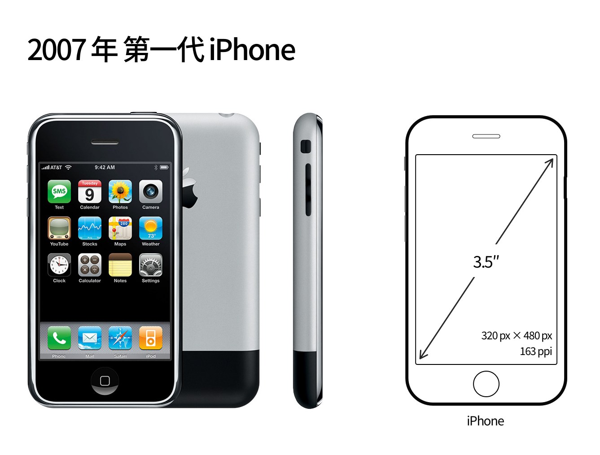
2008 年 iPhone 3G 发布，其搭载的 iPhone OS 2.0 系统首次支持了 App Store 功能，自此第三方 app 开始逐渐在 iPhone 上大放异彩；2009 年 iPhone 3GS 发布，相比前一代，其屏幕从 18 位色升级到了 24 位色，屏幕表现更加丰富。iPhone 3G 和 iPhone 3GS 这两代的屏幕尺寸和分辨率与初代 iPhone 完全相同，即 320px × 480px 的 3.5 寸屏幕，PPI 为 163。
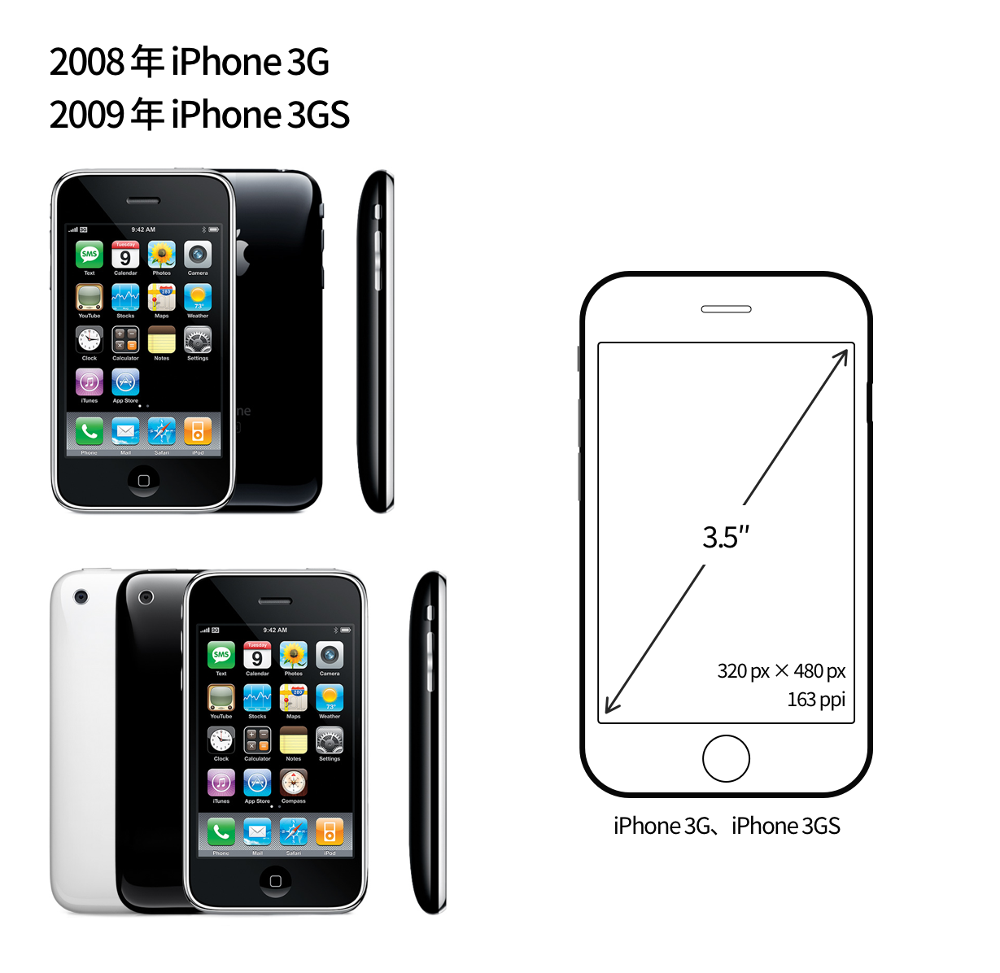
2010 年具有全新硬件设计的 iPhone 4 发布，其屏幕分辨率升级为 640px × 960px，是前几代 iPhone 的两倍，屏幕尺寸仍然保持 3.5 英寸，PPI 达到了 326。在如此高的像素密度下，人眼已经几乎看不到屏幕上的像素点，因此 Apple 称之为「Retina/视网膜屏幕」。2011 年发布的 iPhone 4s 与前一代的屏幕分辨率和尺寸保持相同。
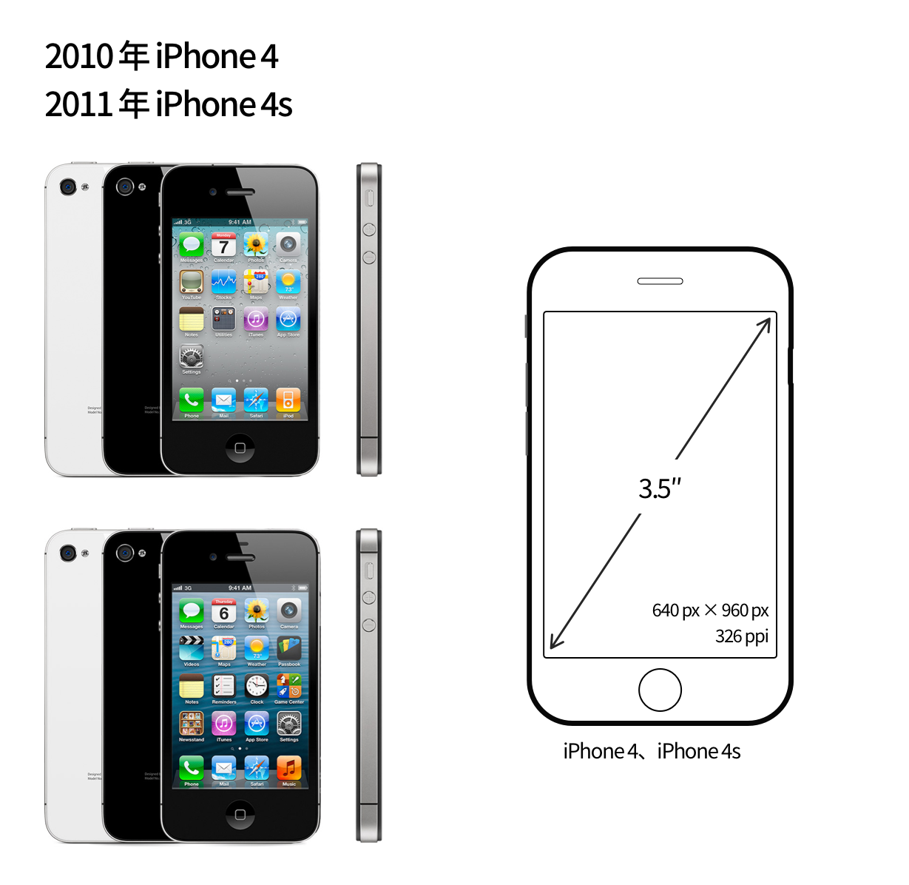
至此 iPhone 的屏幕分辨率由一种变化到两种，在同样大小的 3.5 寸手机屏幕上，更高的分辨率不是为了显示更多的内容，而是为了让屏幕上的内容更加清晰。Retina 屏幕在渲染图像时，每四个像素成为一组，输出原来屏幕的一个像素显示的大小区域内的图像，以此提供了更高的图像精细度，下面的对比图可以直观地看出这种变化，右边的图片明显比左边的图片更加清晰锐利。
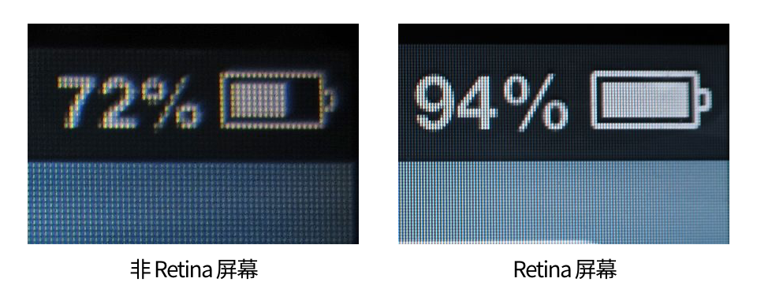
如果一个 app 还没有适配新的 Retina 屏幕分辨率，在 Retina 屏幕上显示就会显得很模糊。
既然存在两种不同的分辨率，在 app 设计上就需要针对它们提供不同尺寸的设计图，比如下面的这个照相机的图片，在非 Retina 屏幕上它的高度是 44 像素，而在 Retina 屏幕上的高度就变成了88 像素，是非 Retina 屏幕上的两倍。
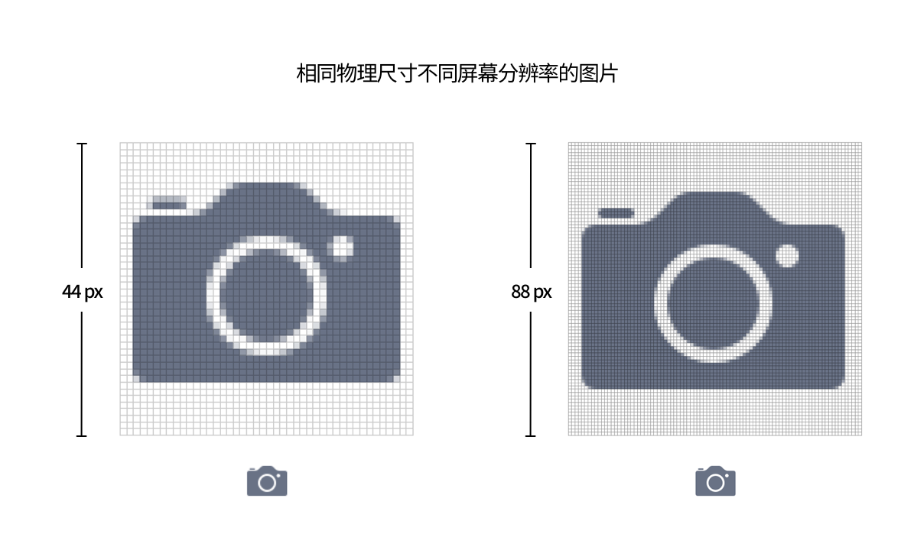
但我们知道，无论是不是 Retina 屏幕，这个照相机的图片在 3.5 寸屏幕上的实际显示大小是相同的，而如果用像素去表示的话，它们的数字却是不同的，这会带来很多沟通和操作成本，需要一种更好的方法去表示这个照相机图片的尺寸，「Point 点」的概念应运而生。
脱离像素密度：Point 点的诞生
Point 点（可简写为 pt）是专门为 Apple 操作系统设计的一个单位，它与屏幕上的像素密度无关，只与屏幕上的内容多少有关。
在第一代 iPhone 到 iPhone 3GS 的非 Retina 屏幕上，一个点就等于一像素，可以表示为 @1x；而在 iPhone 4 到 iPhone 4s 的 Retina 屏幕上，一个点等于两个像素，可以表示为 @2x。而日后发布的一些设备（如 iPhone 6 Plus、iPhone X）还会出现一个点等于三个像素的情况，可以表示为 @3x，这种 @1x、@2x、@3x 可以称之为「比例因子」。
从下面的图示可以看出，在物理尺寸相同时，从 @1x 到 @3x 图像清晰度依次递增。
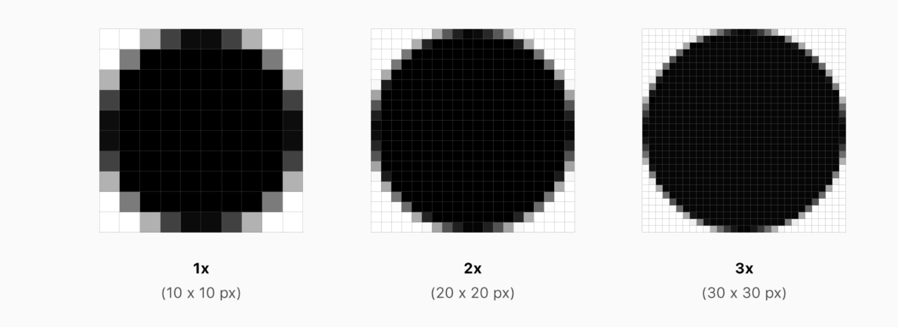
回到上一部分提到的照相机的图片，它的高度就可以直接统一表示成 44pt，不再需要提及是什么设备、什么样的屏幕，这样极大地减少了沟通成本，剔除了设计时无关的干扰因素。设计师在进行设计时可以直接按照 44pt 的高度进行设计，设计好的图像对应导出「camera@1x.png」和「camera@2x.png」两张图片，非 Retina 屏幕的 iPhone 在显示时会自动调用第一张图片，Retina 屏幕的 iPhone 在显示时会自动调用第二张图片。
用与像素密度无关的单位「point 点」来表示设计内容的尺寸的优势在日后 iPhone 的屏幕尺寸变得更加复杂之后会更加凸显。
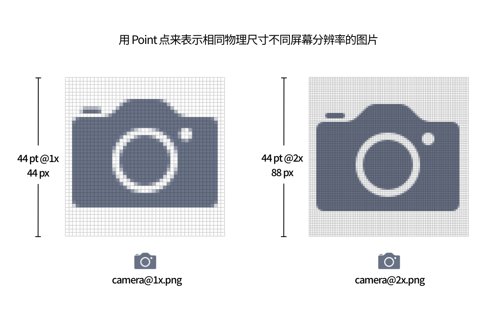
进一步，第一代 iPhone 到 iPhone 3GS 的屏幕分辨率可以表示为 320pt × 480pt @1x，iPhone 4、iPhone 4s 的屏幕分辨率可以表示为 320pt × 480pt @2x。而使用「point 点」这个单位表示的分辨率我们可以称之为「逻辑分辨率」，而使用「px 像素」这个单位表示的分辨率我们可以称之为「渲染分辨率」。

通过「逻辑分辨率」我们可以比较屏幕上显示内容的多少，前五代 iPhone 的逻辑分辨率相同，所以显示内容的数量没有差别；通过「渲染分辨率」以及屏幕尺寸我们可以计算出 PPI，进一步比较屏幕的清晰度，iPhone 4、iPhone 4s 相比前几代 iPhone 的屏幕尺寸相同，但渲染分辨率更高，PPI 更高，所以屏幕更加清晰锐利。
不只 Apple 的操作系统中有 point 这样的与像素密度无关的单位，在其他平台上为了设计和开发方便，也同样存在类似的表示方法，比如 Android 平台上的单位「dp」，想要了解更多可以查看 Android 设计规范。
iPhone 非全面屏时代：屏幕尺寸渐大渐多
4 寸、4.7 寸、5.5 寸全面开花
2012 年 Apple 发布了配备 4 寸屏幕的 iPhone 5，这是历史上 iPhone 屏幕尺寸的第一次改变，屏幕的分辨率为 640px x 1136 px，PPI 仍然为 326，也即相比 iPhone 4s 屏幕清晰度没有变化，其比例因子仍然为 @2x，其逻辑分辨率为 320pt × 568pt 。iPhone 5 搭载的 iOS 6 系统是 iOS 系统拟物化设计的最后一个版本，也是最成熟的一个版本。

仔细观察上面的数字我们可以发现，相比 iPhone 4s，iPhone 5 在横向上的内容宽度与前一代保持一致，但纵向上增多了 88pt，也即在纵向上可以显示更多的内容了。
如果一个 app 没有适配新的 iPhone 5，它将会在 iPhone 5 上以 iPhone 4s 的大小样式显示，也即上下会各留出 44pt 的黑边。
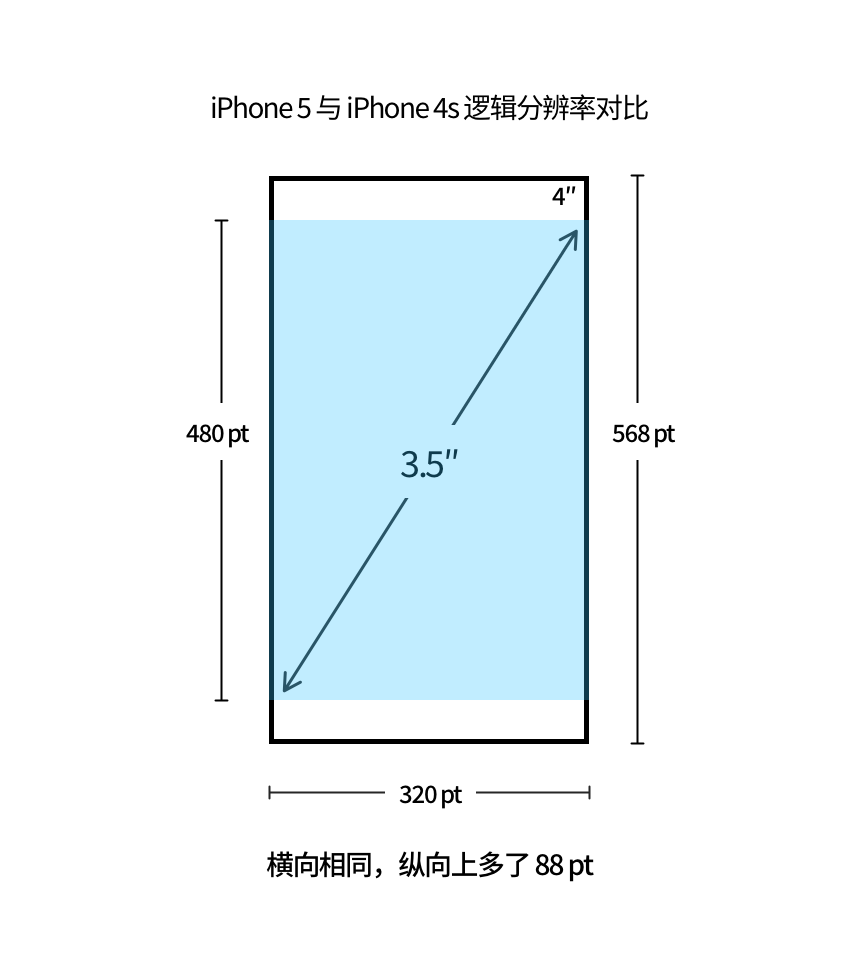
这种通过屏幕逻辑分辨率「横向不变、纵向变长」来增长屏幕尺寸的方式是 iPhone 屏幕进化的重要方式之一，在日后还会多次看到，
同时由于这种变化导致的 app 上下存在黑边的适配问题也同样会多次出现。
2013 年 Apple 发布了相比 iPhone 5 屏幕没有发生变化的 iPhone 5s 和 iPhone 5c，它们的屏幕逻辑分辨率仍然为 320pt × 568pt @2x。同年 Apple 推出了 iOS 7，从此设计风格由拟物化风格转向扁平化风格。
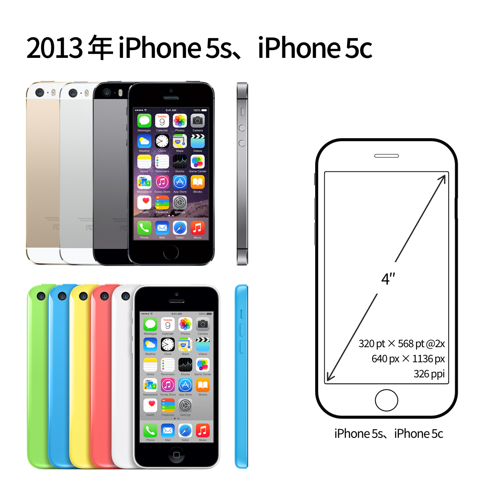
由于屏幕的逻辑分辨率没有发生变化，app 就不需要为新机型的屏幕进行适配。凡是可以运行在 iPhone 5 上的 app 都可以在 iPhone 5s、iPhone 5c 上正常显示。
2014 年 iPhone 6 和 iPhone 6 Plus 同时发布，iPhone 的屏幕尺寸再次发生重大变化，根据不同人群的使用需求和偏好，由之前的一种主流尺寸衍变成了一大一小两种尺寸。
小屏旗舰 iPhone 6 采用 4.7 寸屏幕，屏幕逻辑分辨率为 375pt × 667pt，比例因子为 @2x，PPI 为 326；大屏旗舰 iPhone 6 Plus 采用 5.5 寸屏幕，屏幕逻辑分辨率为 414pt × 736pt，比例因子首次采用 @3x，PPI 为 401。
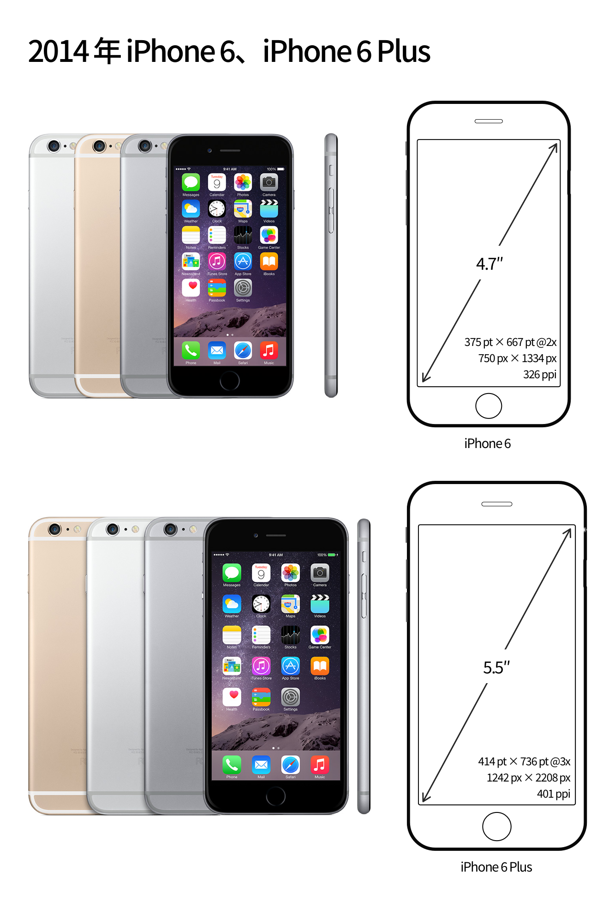
这次的 iPhone 6 Plus 有一点比较特殊的地方，其渲染分辨率为 1242px × 2208px，但其设备真实的屏幕物理分辨率只有 1080px × 1920px，也即处理器渲染的图像分辨率比屏幕自身物理分辨率更高，在实际显示时相当于将渲染的图像缩小了 1.15 倍。图像在屏幕上显示时如果能做到像素一对一显示效果才能最完美，但 Apple 在此机型上作出了妥协，究其原因可能是因为当时 1080p 的屏幕的广泛使用可以削减手机成本、加快出货日期，同时也可以有更好的续航能力。
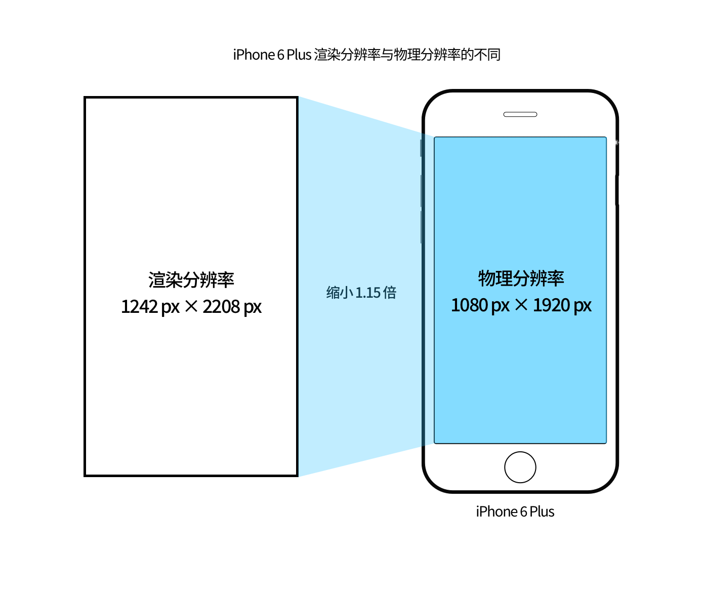
这是历史上 iPhone 屏幕尺寸的第二次重大变化，但与之前的 4 寸 iPhone 5s 仔细对比观察，你会发现新的 4.7 寸和 5.5 寸的屏幕与以前的 4 寸屏幕宽高比例是相同的，所以可以理解成 4 寸的屏幕分别「等比放大」了约 1.17 倍和 1.29 倍，变成了现在的 4.7 寸和 5.5 寸屏幕。屏幕逻辑分辨率在宽度和高度上的增加，可以让屏幕上一次性展示更多内容，减少用户滚动屏幕的频率。
至此，从屏幕逻辑分辨率的宽度来看，分化出了三种：320pt、375pt、414pt。在 app 设计时一般以 375pt 宽度为基准，其他宽度 app 的设计进行针对性处理。实际上，这三种宽度的逻辑分辨率一直到 2019 年都没有再发生变化。
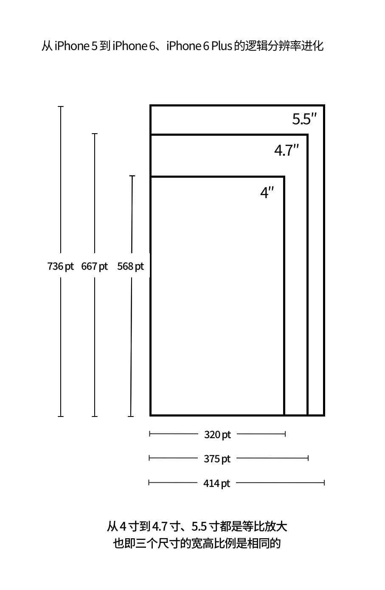
如果没有适配新机型的 app 在显示时，由于和上代 iPhone 具有相同的屏幕比例，所以会直接将 iPhone 5s 的 app 放大显示到屏幕上。用户的直观感受就是虽然屏幕变大了，但仅仅是将原有的内容放大了，而不是在屏幕上可以一次性展示更多内容。而且因为不是像素一对一显示，屏幕上的内容看上去会不够清晰锐利。
这种通过将屏幕逻辑分辨率「等比放大」来增长屏幕尺寸的方式也同样是 iPhone 屏幕进化的重要方式之一，在日后也会多次看到，同时由于这种变化导致的 app 被整体放大显示的适配问题也同样会多次出现。
2015 年到 2017 年 Apple 相继发布了 iPhone 6s 和 iPhone 6s Plus、iPhone 7 和 iPhone 7 Plus、iPhone 8 和 iPhone 8 Plus，它们的屏幕参数与 iPhone 6、iPhone 6 Plus 保持了一致。4.7 寸和 5.5 寸屏幕的 iPhone 也在四年间迅速普及。
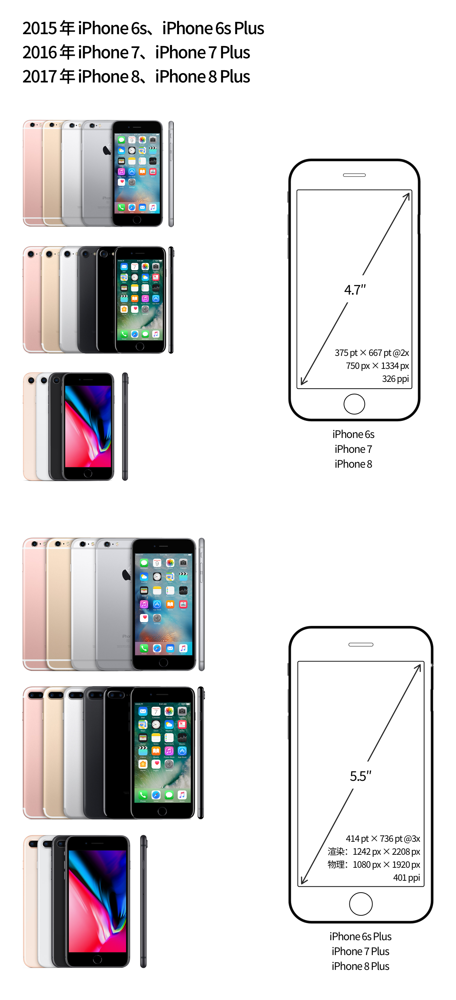
至此，iPhone 非全面屏时代可以基本宣告结束了。
屏幕不断被放大的产物：放大显示功能
如前文所讲，iPhone 5s 的 4 寸屏幕、iPhone 6 的 4.7 寸屏幕、iPhone 6 Plus 的 5.5 寸屏幕的宽高比例是相同的，它们是依次放大的。于是从 iPhone 6、iPhone 6 Plus 开始，iOS 新增了一个这些机型独有的功能——「放大显示」，简单来看它将屏幕上的内容放大显示以便于存在视力障碍的用户更轻松使用 iPhone，当然你也可以根据自己的偏好选择使用放大显示模式。
将屏幕上的内容，特别是包含了众多第三方 app 的内容进行整体放大而不让布局错乱并不是一件简单的事，为了减少不必要的设计和开发成本，放大显示功能巧妙地利用了已有的屏幕逻辑分辨率。具体来说，放大显示的实质是将高一级的逻辑分辨率降级到同一比例的低一级的逻辑分辨率，比如当放大显示模式开启时， 5.5 寸屏幕可以使用 4.7 寸屏幕的逻辑分辨率来显示内容，4.7 寸屏幕可以使用 4 寸屏幕的逻辑分辨率来显示内容。将低一级的逻辑分辨率放到更大的屏幕上展示，自然会有放大效果，适配了大屏幕 iPhone 的 app 自然也适配了更小屏幕的 iPhone，这样就可以完全没有额外的设计和开发成本。
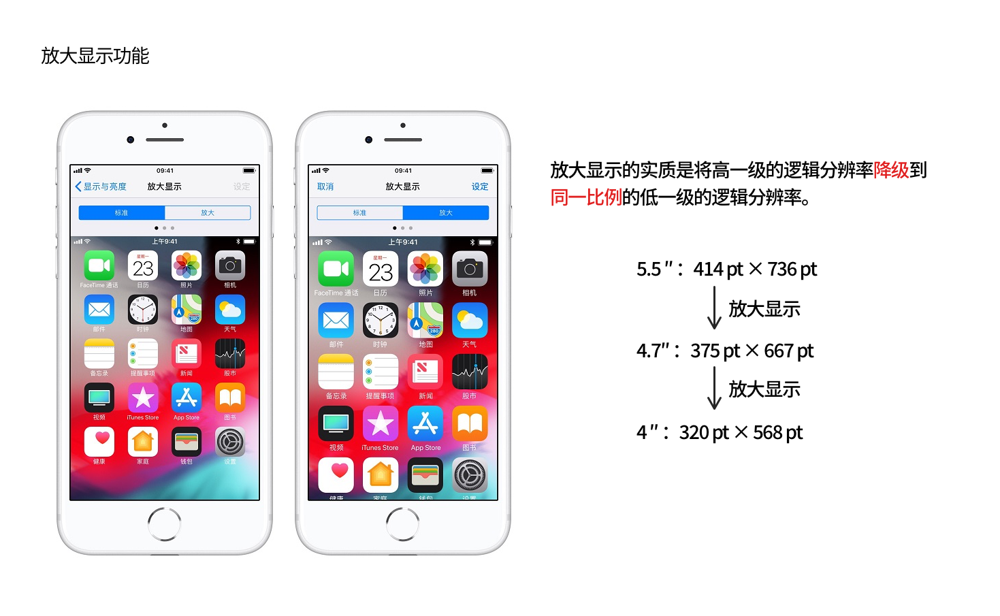
适配不同尺寸屏幕的布局工具：Auto Layout
随着 iPhone 机型越来越多，屏幕尺寸越来越多，屏幕的逻辑分辨率也越来越多。设计师和开发者在设计和开发 app 时需要对多种屏幕布局进行适配调整，才能让 app 在每一台 iPhone 上完美运行。
iPhone 上的 app 中的内容包含文字、图片、按钮、输入框、导航栏等各种各样的形式，我们可以把这些不同形式的元素统称为「View 视图」。要确定 iPhone app 中每一个 view 在屏幕上的布局，可以想到的最直观的方式就是确定这每一个 view 的摆放位置和尺寸，摆放位置可以通过在屏幕上建立坐标系后利用横纵坐标（x, y）来表示，尺寸可以通过描述一个 view 的宽度和高度来表示。这种确定了每一个 view 的位置和尺寸的布局方式不会受内部或者外部因素所影响，可以称之为「绝对布局」。
例如下图中的这个例子，在 iPhone 8 上有一个 app，app 的界面中展示有四个不同颜色的方块。按照绝对布局的方法来确定四个方块的位置和尺寸：
- 红色方块的位置坐标是（138，32），宽度为 100，高度为 100；
- 黄色方块的位置坐标是（138，156），宽度为 100，高度为 100；
- 绿色方块的位置坐标是（138，280），宽度为 100，高度为 100；
- 蓝色方块的位置坐标是（138，404），宽度为 100，高度为 100。

当把上面确定的每个方块的绝对布局参数放到 iPhone 8 Plus 的屏幕上显示时，我们就会发现四个方块在屏幕上显示的位置有些奇怪。仔细思考下，在 iPhone 8 的屏幕上四个方块的位置坐标之所以可以确定下来，是因为我们想要这四个方块在屏幕水平方向上是居中对齐的。当移动到 iPhone 8 Plus 的屏幕上，屏幕的逻辑分辨率发生了变化，屏幕变宽了，如果还是按照之前的位置参数放置四个方块，其自然不会在屏幕水平方向上处于居中对齐的位置了。
要想要 iPhone 8 Plus 屏幕上的四个方块在水平方向上也能居中对齐显示，那四个方块的位置坐标就需要相对应发生变化。这种「分而治之」的处理方式固然可以面面俱到，但其耗费的成本也是巨大的，在屏幕尺寸不断变复杂的时间点上，需要一套方法去整合不同屏幕上的 app 布局，这套方法就是诞生于 iOS 6 并逐渐发展成熟的「Auto Layout 自动布局」方案。
Auto Layout 是一种相对布局的方案，它不要求直接给出每一个 view 的位置和尺寸信息，而是通过建立 view 之间的约束关系（constraint），动态计算出在不同情景时每个 view 的具体位置和尺寸。
来看下图中的这个例子，蓝色方块命名为「BlueView」，红色方块命名为「RedView」，它们之间的距离是 8，通过图中所示的等式就可以表示出这两个 view 之间的约束关系，用自然语言来描述就是：
- 红色方块的左端 = 1.0 × 蓝色方块的右端 + 8
这里特别提及的一点是，在描述蓝色方块右端和红色方块的左端之所以不直接使用「right 右」和「left 左」这两个单词，而是使用了「trailing 尾」和「leading 头」这两个单词，是因为这样的描述可以更好地兼顾从右向左书写的语言（如阿拉伯语）的 app 的适配，利于 app 实现国际化。
通过两个方块之间相对的约束关系，不论在任何尺寸的屏幕上，这两个方块之间的距离都是 8，不会因为两个方块各自的位置和尺寸而变动。
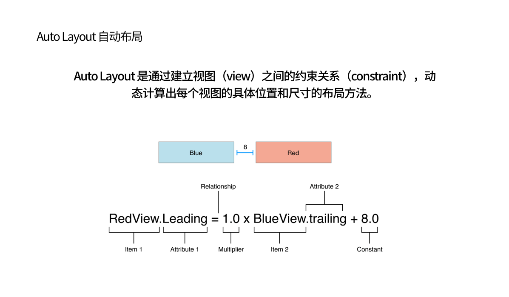
回到上面绝对布局中所举的例子，现在用相对布局的方法来思考下四个不同颜色的方块该如何布局，按照 Auto Layout 的思想，可以确定界面上 view 的几个约束关系：
- 红色方块的宽和高 = 黄色方块的宽和高 = 绿色方块的宽和高 = 蓝色方块的宽和高 = 100；
- 红色方块的顶部 = 屏幕顶部 + 32；
- 纵向上不同颜色方块之间的距离 = 24
- 红色方块的 X 轴中心位置 = 黄色方块的 X 轴中心位置 = 绿色方块的 X 轴中心位置 = 蓝色方块的 X 轴中心位置 = 屏幕的 X 轴中心位置。
通过上面确定的四个约束关系，四个方块的尺寸固定了下来，但在屏幕上的位置并没有完全固定，会相对于屏幕尺寸发生动态变化。这样当整个界面显示在 iPhone 8 Plus 或者其他尺寸的屏幕上时，四个方块就能始终在屏幕水平方向上居中对齐。
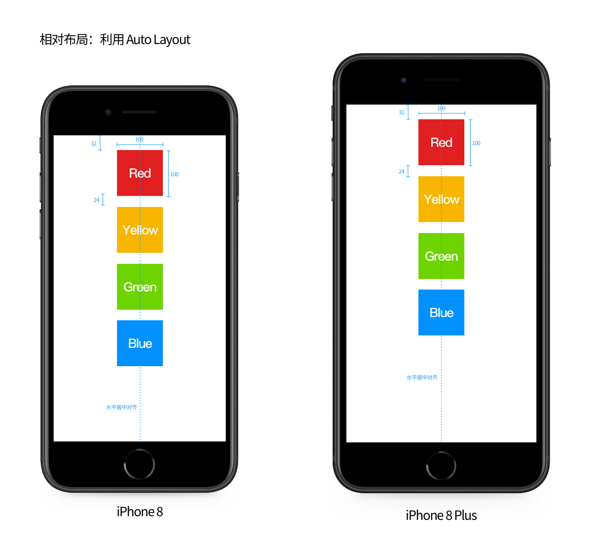
通过 Auto Layout 这个武器，利用相对布局的思想，设计师和开发者确定好不同 view 之间的约束关系，就能让整个界面在不同尺寸的设备上都能正确地显示，不再需要一个设备一套设计方案，这样的设计也被称为「适应性布局设计」。
以上示例只是 Auto Layout 的一个简单示意，在实际情况中，app 界面上包含各种 view，约束关系自然更加复杂，Auto Layout 的作用也会更加明显。且从更大范围来看，不只屏幕尺寸变化，Auto Layout 的这种适应性布局设计方案还可以适应各种外部和内部变化：
- 外部变化：
- 不同屏幕尺寸；
- 不同 Size Class（下一部分会讲到）；
- 旋转设备改变使用方向；
- iPad 上进入或退出 Slide Over、Split View 模式；
- 来电和录音时状态栏变高。
- 内部变化：
- App 自身改变导致的内容变化；
- App 支持国际化；
- App 支持「Dynamic Type 动态类型」。
想要了解更多可参考 Apple 提供给开发者的「Auto Layout Guide」。
iOS 、iPadOS 生态下的重要武器：Size Class
通过 Auto Layout，不同屏幕尺寸的设备都可以用一套设计方案来布局内容，但这并不代表不同尺寸的屏幕上显示的内容布局都应该是一样的，比如同一个 app 在 iPhone 和 iPad 上的布局一般是不一样的，更何况屏幕在使用时还需要区分横竖和竖屏的使用场景，app 横屏和竖屏显示的内容布局也会不一样。从 iOS 8 开始推出的「Size Class 尺寸级别」就是为了解决这个问题。
Size Class 根据 app 的实际使用场景定义了不同尺寸的屏幕、不同方向的屏幕在「width 宽度」和「height 高度」上的尺寸级别，较短的宽度/高度定义其级别为「compact」，意为紧凑，可放置较少的内容；较长的宽度/高度定义其级别为「regular」，意为普通，可放置较多的内容。宽度和高度与这两个级别相互组合就形成了四种尺寸级别。特别注意的是，同一个尺寸的设备，横屏和竖屏的尺寸级别并不一定是完全相反的。
如下图，iPhone 8 在竖屏时的 Size Class 是「compact width，regular height」，在横屏时是「compact width，compact height」；iPhone 8 Plus 在竖屏时是「compact width，regular height」，在横屏时是「regular width，compact height」，与 iPhone 8 并不相同，因为 iPhone 8 Plus 屏幕尺寸更大。
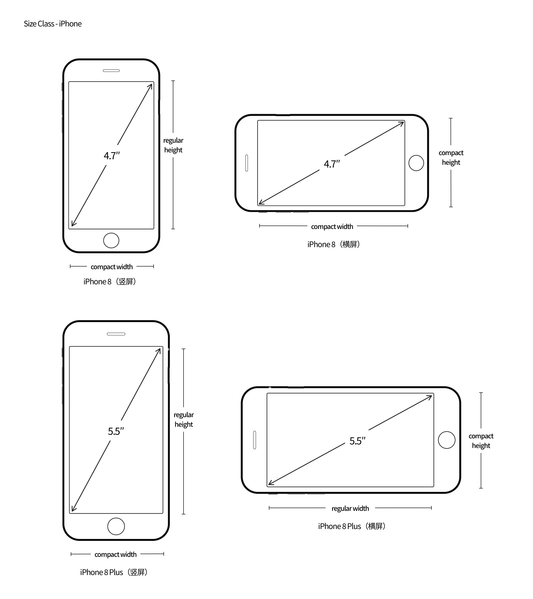
不同屏幕尺寸、不同屏幕方向的 iPad 也同样有 Size Class 的定义，如 iPad Pro 11 寸在竖屏时是「regular width，regular height」，在横屏时也是「regular width，regular height」。特别的，从 iOS 9 开始，iPad 上的 app 支持以 Slide Over 侧拉或者 Split View 分屏浏览的形式显示，在这些使用场景中，它们也被定义了 Size Class。
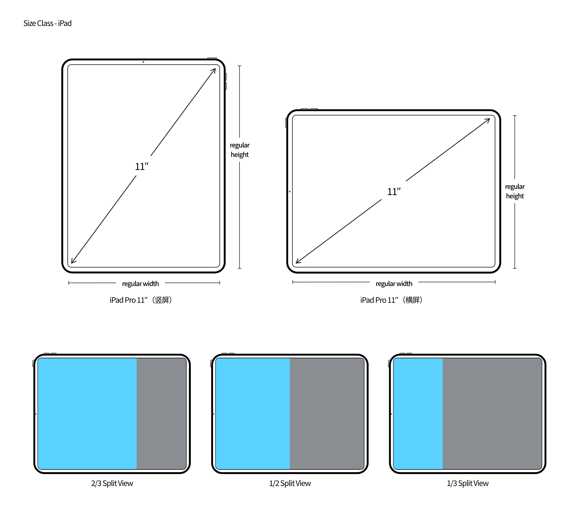
想要了解每个 iPhone 和 iPad 的 Size Class 以及 Size Class 的更多内容可参考 iOS Human Interface Guidelines 中的相关章节以及我的文章：
有了 Size Class，设计师和开发者在设计和开发 app 时就不需要根据繁多的屏幕尺寸和屏幕使用方向等多个内外因素来确定 app 内容布局，新的屏幕尺寸出现时也无需再单独适配。来看几个具体的 Size Class 应用实例。
第一个例子，2018 年 6.5 寸屏幕的 iPhone Xs Max 发布前，有人在 iOS 12 的 Beta 版本中发现当让 iPhone 模拟器运行在传闻中的 iPhone Xs Max 分辨率之下时，部分系统自带 app 在横屏时的内容布局与 5.8 寸的 iPhone X 不一样，比如「信息」app 横屏时，5.8 寸屏幕只能显示某个联系人的短信内容，但 6.5 寸屏幕就可以分左右两边显示短信列表和具体的短信内容。据此进一步印证了 6.5 寸的 iPhone Xs Max 的存在。
同一个 app 在不同屏幕尺寸的屏幕上显示的内容布局不同，究其原因，如下图所示，在屏幕宽度上 5.8 寸屏幕的 Size Class 是「compact width」，6.5 寸屏幕的 Size Class 是「regular width」，Size Class 不同，所以它们的 app 内容显示布局不一样。
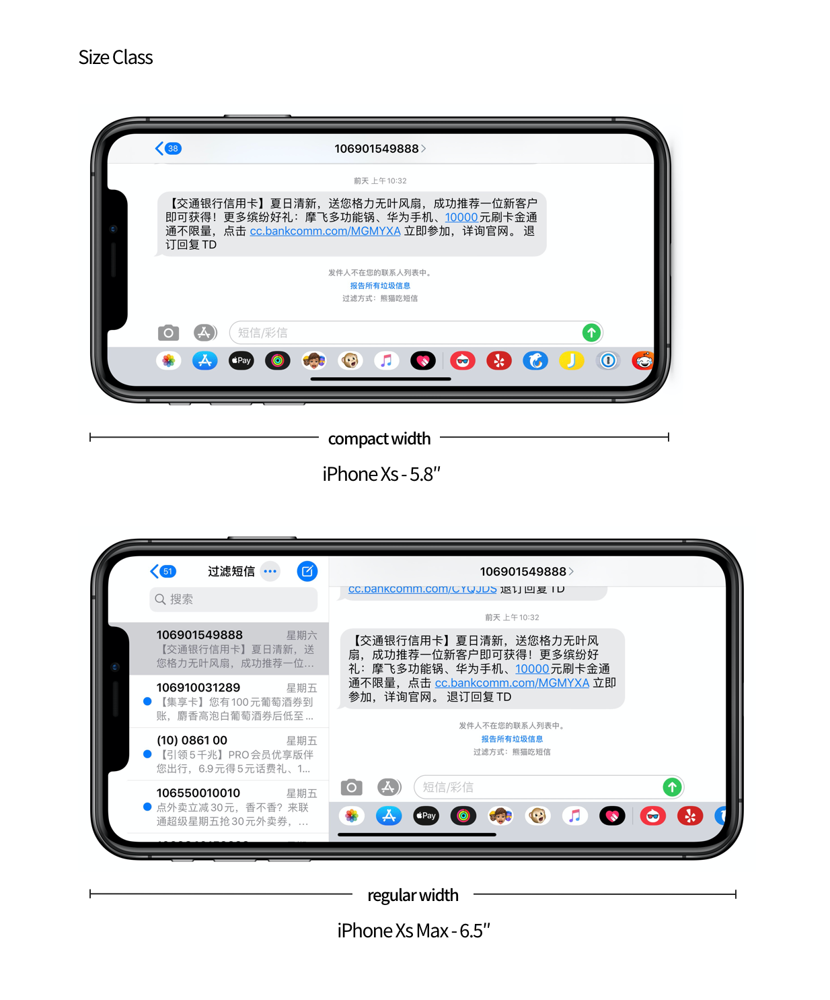
第二个例子，再次回到在 Auto Layout 中提到的 app，基于已经确定的四个方块的约束关系，当在 iPhone 横屏使用时，我们会发现由于四个方块是竖直排列的，所以不能在横屏时的屏幕上显示完全，左右两侧还有较大的空间被浪费掉了。
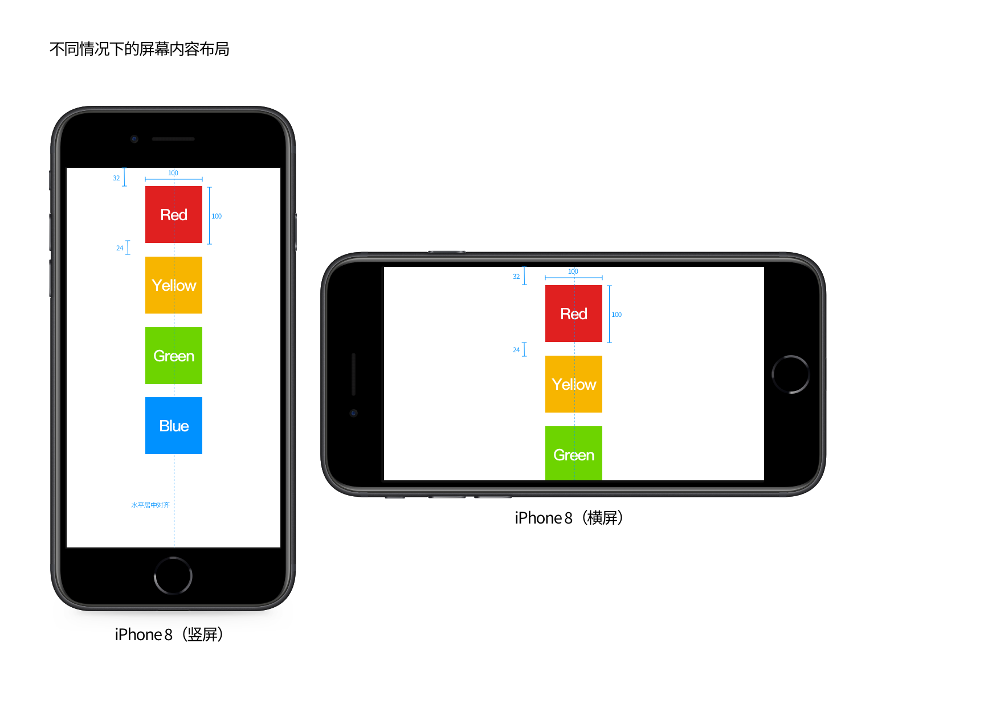
当利用 Size Class 对不同情况下的内容进行布局，iPhone 竖屏也即 Size Class 为「compact width，regular height」时，四个方块在屏幕上水平居中对齐，纵向排列；iPhone 横屏也即 Size Class 为「any width，compact height」（any 包括 compact 和 regular 两种情况）时，四个方块在屏幕上竖直居中对齐，横向排列，这时的布局约束关系为：
- 红色方块的宽和高 = 黄色方块的宽和高 = 绿色方块的宽和高 = 蓝色方块的宽和高 = 100；
- 红色方块的左侧 = 屏幕左侧 + 110；
- 横向上不同颜色方块之间的距离 = 24
- 红色方块的 Y 轴中心位置 = 黄色方块的 Y 轴中心位置 = 绿色方块的 Y 轴中心位置 = 蓝色方块的 Y 轴中心位置 = 屏幕的 Y 轴中心位置。
进一步，当 app 运行在 iPad 上，也即 Size Class 为「regular width，regular height」时，四个组成一个方块组，分两行排列，整个方块组在屏幕上竖直居中对齐，这时的布局约束关系为：
- 红色方块的宽和高 = 黄色方块的宽和高 = 绿色方块的宽和高 = 蓝色方块的宽和高 = 100；
- 整个方块组的左侧 = 屏幕左侧 + 485；
- 纵向、横向上不同颜色方块之间的距离 = 24
- 整个方块组的 Y 轴中心位置 = 屏幕的 Y 轴中心位置。
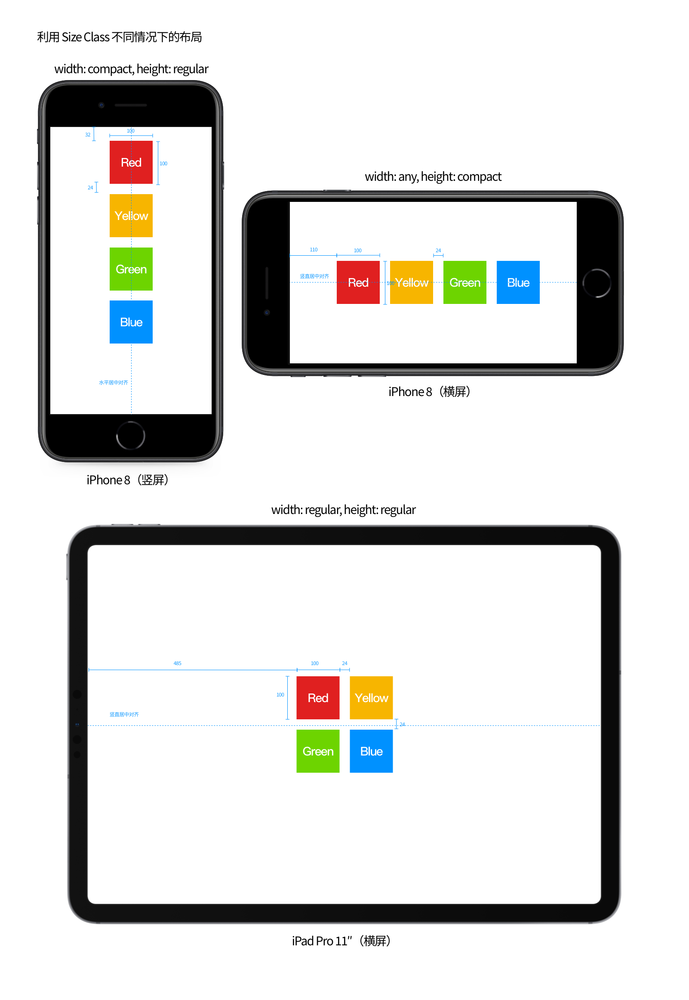
这样同样的内容在 iPhone 横屏、竖屏和 iPad 的不同设备和使用场景上布局不同，把上面三种情况的内容布局的约束关系总结概括一下：
-
共用约束关系：
- 红色方块的宽和高 = 黄色方块的宽和高 = 绿色方块的宽和高 = 蓝色方块的宽和高 = 100。
-
Size Class 为「compact width，regular height」，也即 iPhone 竖屏时：
- 红色方块的顶部 = 屏幕顶部 + 32；
- 不同颜色方块之间的距离 = 24
- 红色方块的 X 轴中心位置 = 黄色方块的 X 轴中心位置 = 绿色方块的 X 轴中心位置 = 蓝色方块的 X 轴中心位置 = 屏幕的 X 轴中心位置。
-
Size Class 为「any width，compact height」，也即 iPhone 横屏时：
- 红色方块的左侧 = 屏幕左侧 + 110；
- 横向上不同颜色方块之间的距离 = 24
- 红色方块的 Y 轴中心位置 = 黄色方块的 Y 轴中心位置 = 绿色方块的 Y 轴中心位置 = 蓝色方块的 Y 轴中心位置 = 屏幕的 Y 轴中心位置。
-
Size Class 为「regular width，regular height」，也即 iPad 横竖屏时：
- 整个方块组的左侧 = 屏幕左侧 + 485；
- 纵向、横向上不同颜色方块之间的距离 = 24
- 整个方块组的 Y 轴中心位置 = 屏幕的 Y 轴中心位置。
第三个例子，随着 iPad 的定位在逐渐向电脑靠拢，人们对 iPad 上的 app 生产力要求越来越高，需要利用好 iPad 这块大屏幕的空间、更容易地在 app 内进行导航，所以在 iPadOS 14 中，iPad app 增加了侧边栏这个导航样式，用户可以在侧边栏上更容易找到 app 不同层级的内容入口。但由于侧边栏占据了较大的显示面积，所以侧边栏不适合内容显示区域较小的情景。
例如下图中的「音乐」app，在 iPad Pro 11 寸上全屏展示时，此时 Size Class 为「regular width，regular height」，app 使用侧边栏作为导航方式；当「音乐」app 以 Slide Over 形式运行时，此时 Size Class 为「compact width，regular height」，横向上显示空间有限，所以 app 改用以前的标签栏作为导航方式。
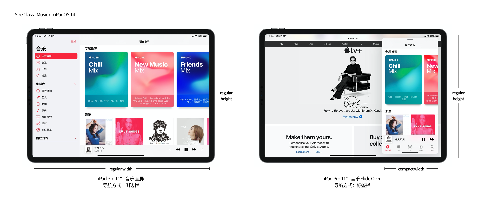
想要了解更多有关于 iPadOS 14 侧边栏以及针对 iPad 如何设计 app 的内容，可参考我的文章：
有了 Size Class 这个武器，在 iPhone 和 iPad 上进行 app 的自适应布局设计变得更加方便统一。但目前的 Size Class 并不是完美的，因为 iPad 横屏和竖屏时的 Size Class 在最初设计时都被定义为了「regular width，regular height」，所以当想要针对 iPad 横屏和竖屏有不同的内容布局方案时，Size Class 并不能满足，还需要依靠其他判断条件。随着 iPad app 的地位的提高，也许以后的 Size Class 会进化出更多的级别以应对上述情况。
iPhone 转向全面屏时代：不规则屏幕的出现
全面屏的 5.8 寸、6.1 寸、6.5 寸
2017 年 iPhone 转向全面屏时代，搭载 iOS 11、配有 5.8 寸屏幕的 iPhone X 发布，屏幕分辨率为 1125px × 2436px，PPI 达到 458，屏幕尺寸和屏幕分辨率都发生了重大变化，而且屏幕由以前的 LCD 屏改为了 OLED 屏。由于从非全面屏到全面屏的进化，iPhone 去除了 Home 键，由软件层面的 Home Indicator 代替；去除了 Touch ID，由刘海内的Face ID 代替；屏幕的四角也变成了圆角，整块屏幕不再是规则的矩形。
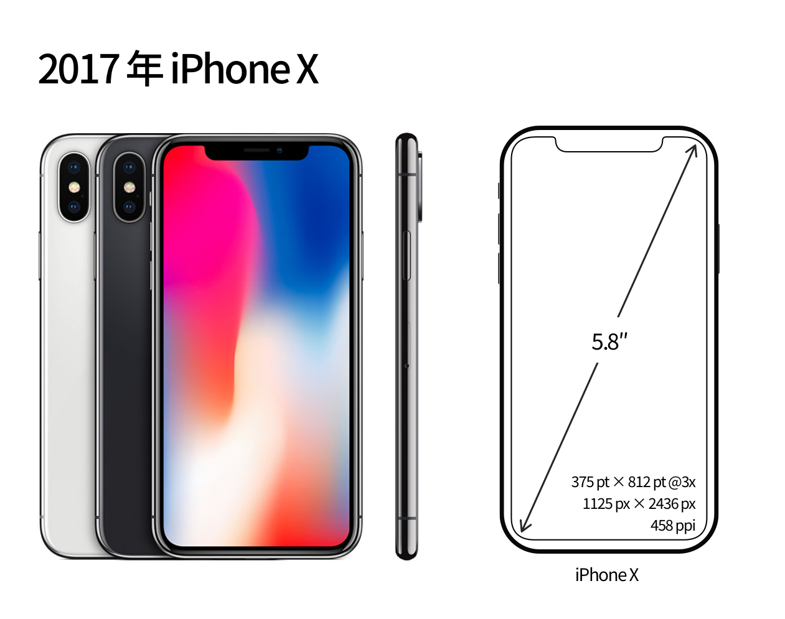
5.8 寸的 iPhone X 的逻辑分辨率为 375pt × 812pt，比例因子为 @3x。逻辑分辨率在横向上是与 4.7 寸的 iPhone 8 的屏幕相同的，在纵向上比 iPhone 8 多了 145 pt，纵向上可以显示更多内容了。所以 iPhone X 的逻辑分辨率实际上是对 iPhone 8 的逻辑分辨率「横向不变，纵向变长」得来的，这与从 iPhone 4s 到 iPhone 5 的屏幕进化方式相同。
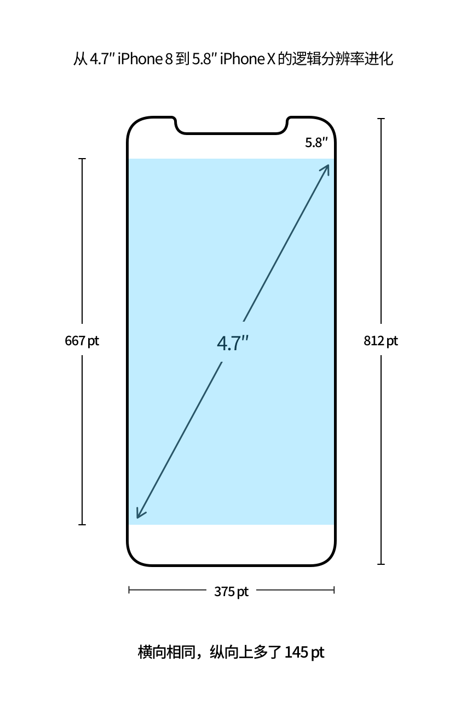
屏幕变长，未适配新机型的 app 将会在 iPhone X 上以 iPhone 8 的大小显示，上下留有黑边。同时，由于刘海和 Home Indicator 的加入、屏幕四角改为圆角，在全面屏 iPhone 上设计开发 app 还需要综合考虑这些改变，具体可参考我的文章：
2018 年 5.8 寸的 iPhone Xs 发布，与 iPhone X 的屏幕保持一致，同时全面屏 iPhone 家族新增了 6.5 寸的 iPhone Xs Max，屏幕分辨率为 1242px × 2688px，PPI 为 458。2019 年 5.8 寸的 iPhone 11 Pro 和 6.5 寸的 iPhone 11 Pro Max 发布，与上一代的屏幕保持一致。
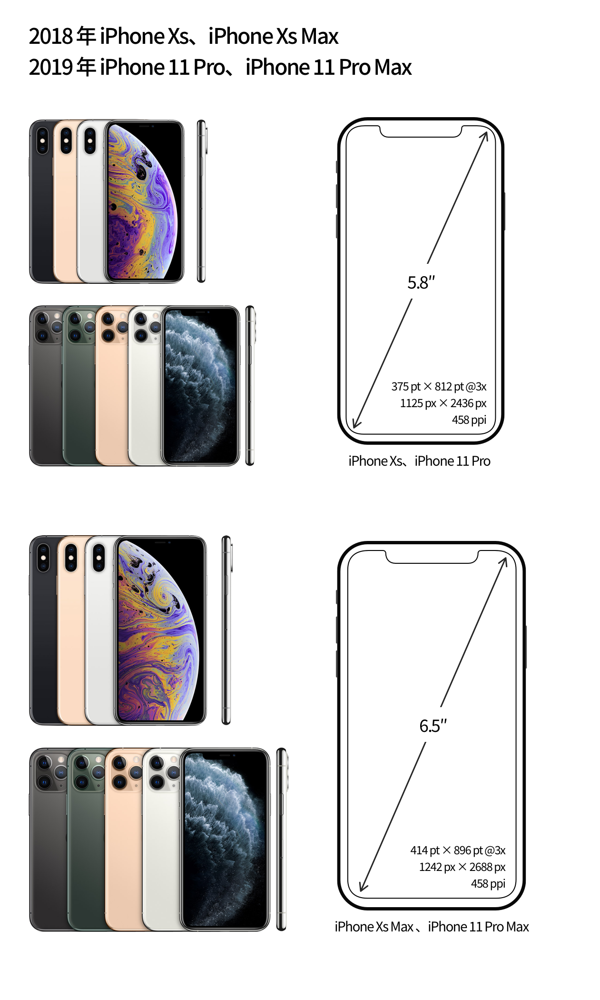
2018 年 Apple 还同时发布了 6.1 寸屏幕的 iPhone Xʀ，屏幕分辨率为 828px × 1792px，PPI 为 326；2019 年 iPhone Xʀ 的继承者 iPhone 11 发布，与上一代的屏幕保持一致。
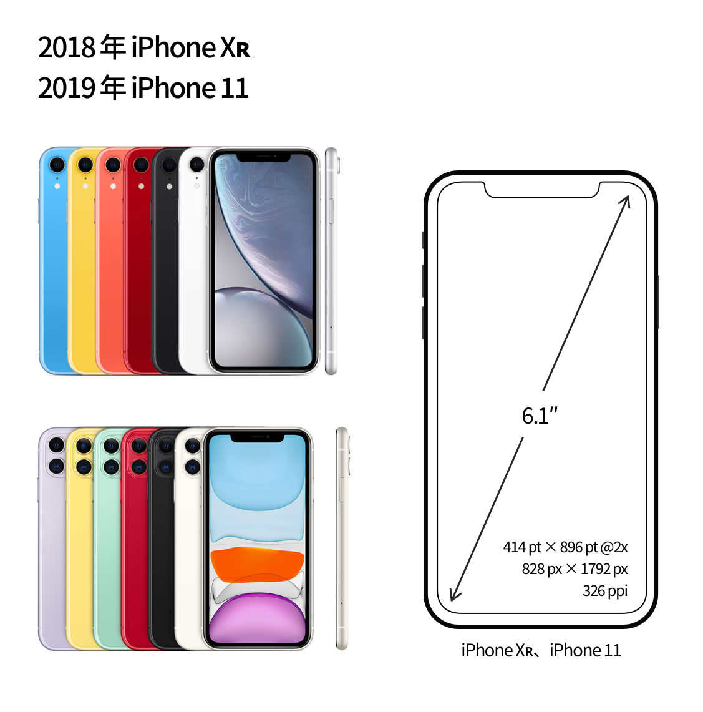
2018 年和 2019 年全面屏 iPhone 家族新增的 6.1 寸屏幕和 6.5 寸屏幕，它们虽然屏幕尺寸不同，但逻辑分辨率相同，都为 414pt × 896pt，不同的是 6.1 寸的比例因子为 @2x，6.5 寸的比例因子为 @3x，所以它们显示的内容数量是相同的，但 6.5 寸的屏幕清晰度更高。
这两个机型的逻辑分辨率在横向上是与 5.5 寸的 iPhone 8 Plus 相同的，都为 414pt，在纵向上比 iPhone 8 Plus 多了 160pt，所以也是采用「横向不变，纵向变长」的逻辑进化而来。5.8 寸的全面屏 iPhone 是由 4.7 寸的非全面屏 iPhone 进化而来，6.1 寸/6.5 寸的全面屏 iPhone 是由 5.5 寸的非全面屏 iPhone 进化而来，同时 4 寸、4.7 寸、5.5 寸的非全面屏 iPhone 的宽高比例是相同的，5.8 寸、6.1 寸、6.5 寸的全面屏 iPhone 的宽高比例也是相同的，6.1 寸、6.5 寸也可以看做是由 5.8 寸屏幕「等比放大」而来。
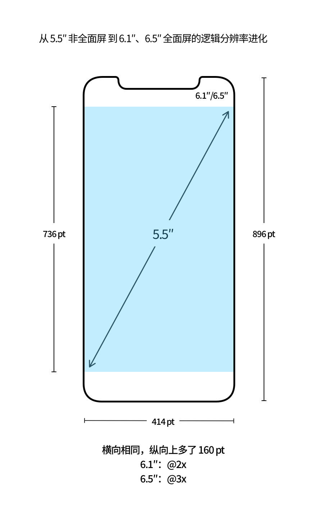
如果 app 没有适配新的机型，将会在 6.1 寸和 6.5 寸的屏幕上把 iPhone X 的 app放大到全屏显示，清晰度不如已经适配的 app；如果 app 连 iPhone X 都没有适配，则会以 iPhone 8 Plus 的大小显示，上下留有黑边。有关于更大屏幕的全面屏 iPhone 适配和设计，可参考我的文章：
不止是 iPhone，iPad Pro 系列也在 2018 年的产品迭代中提高了屏占比例，引入了 Face ID 和 Home Indicator，使软件层面的操作逻辑与 iPhone 保持一致，iPad Pro 的屏幕进化也发生了与 iPhone 屏幕进化类似的过程，并且由于 iPad app 支持 Slide Over、Split View 显示模式，对 app 的适配和设计提出了更高的要求，有关于这一部分可参考我的文章：
为了推动 app 生态的进化，Apple 在之前也向开发者发出通知，2020 年 6 月 30 日之后，所有要更新或新上架的 iPhone app 必须支持所有的 iPhone 屏幕尺寸，iPad app 必须支持所有的 iPad 屏幕尺寸。同时强烈鼓励开发者对 iPad app 支持多窗口、多任务功能（侧拉、分屏浏览、画中画）。
适应屏幕新变化：Safe Area
在非全面屏 iPhone 的时代，从 iOS 7 开始，为了让 app 在设计和开发时更容易、更正确地进行布局，Apple 引入了「Layout Guide 布局指导」的概念。简单来说，显示在 iPhone 上的 app 中不仅包括 app 本身要显示的内容，如文字、图片等，还包括一些让 app 更易用、更统一的系统控件，如状态栏、导航栏、标签栏、搜索栏、工具栏等。这些系统控件一般会在屏幕顶部或底部占据一定的区域，而除去这部分才是 app 真正显示内容的区域。
如下图所示，在 iPhone 8 上，屏幕顶部的状态栏、导航栏、搜索栏的区域称为「Top Layout Guide」，屏幕底部的标签栏的区域称为「Bottom Layout Guide」，app 内真正显示的内容应该在这两者之间进行布局。
由于屏幕是一个规则的矩形，无论是竖屏还是横屏，系统控件只会出现在屏幕顶部和底部，屏幕左右两侧是不受约束的。
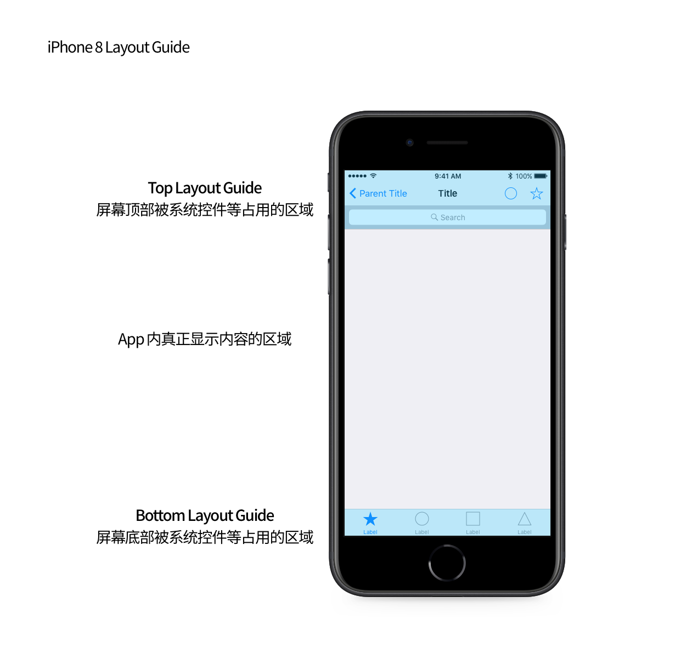
进入全面屏时代，刘海的加入，屏幕四角由直角改为圆角使得屏幕不再是一块规则的矩形，同时软件层面 Home Indicator 变成了常驻系统控件，原先的 Top Layout Guide 和 Bottom Layout Guide 已经不能再适应新需求，从 iOS 11 开始进化成了「Safe Area 安全区域」。
如下图所示，Safe Area 是一块可供自定义内容展示的规则矩形。在竖屏时，由于顶部刘海和底部 Home Indicator 的存在，需要空出这两块区域；在横屏时，由于一侧有刘海，一侧没有，但为保证内容对称，所以左右两侧需空出等宽的区域，而屏幕底部也需要为 Home Indicator 空出一定的区域。进一步，当放置了系统控件之后，Safe Area 会在上面的基础上进一步缩小。
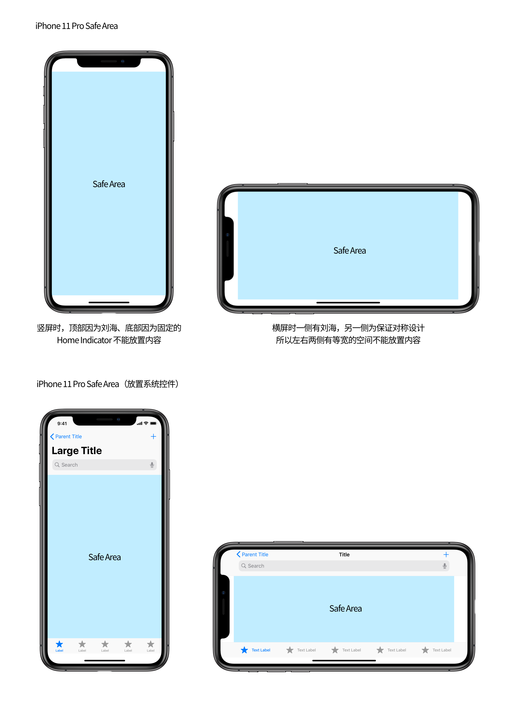
在使用 Auto Layout 对界面上的 View 确定布局约束时，就可以直接利用上 Safe Area 以适应不同的使用场景。举一个简单的例子，下图中红色方块的其中一条布局约束就可以定义为：
- Size Class 为「compact width，regular height」，也即 iPhone 竖屏时：
- 红色方块的顶部 = Safe Area 的顶部 + 32；
- Size Class 为「any width，compact height」，也即 iPhone 横屏时：
- 红色方块的头部 = Safe Area 的头部 + 110。
这样利用 Safe Area 确定的布局方案会根据不同机型的 Safe Area 的不同进行自动调整，不再需要为每个机型单独适配，界面上的元素也就不会出现被遮挡的情况。
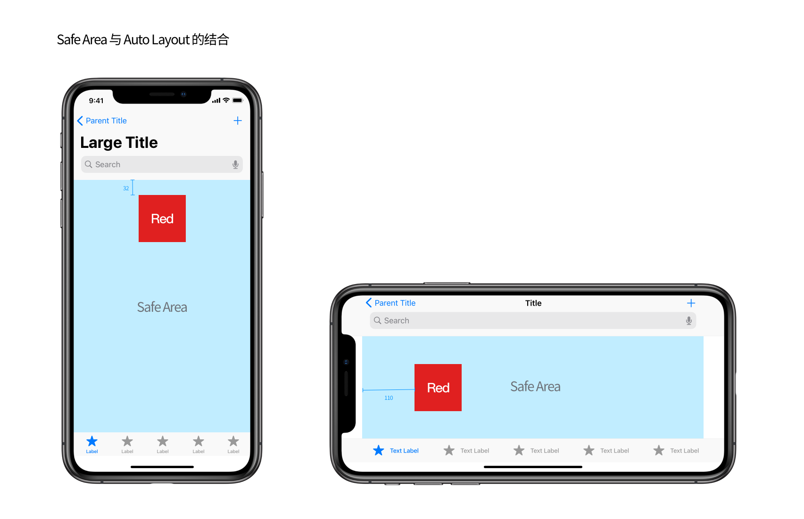
总的来看，有了 Safe Area 的定义，app 在设计和布局自定义内容时应该处于 Safe Area 之内，避免与屏幕的圆角、刘海、Home Indicator 发生重叠或裁切，但对于可滚动的内容以及控件/页面的背景颜色，可以让其延伸到屏幕边缘，以形成连续显示的效果。
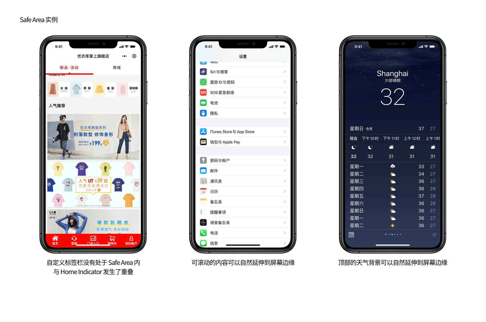
可以说全面屏 iPhone 的诞生催生了 Safe Area，让 Layout Guide 更加完善，为众多第三方 app 在设计和开发时提供了内容布局指导，以让它们在整个 iOS 系统中保持一致性。
OLED 屏的影响：支持深色模式
iPhone 从非全面屏向全面屏进化的过程中，部分型号的屏幕也从 LCD 屏幕进化到了 OLED 屏幕，同时伴随 iPhone 的屏幕尺寸越来越大，耗电自然也会增多，续航变成了用户日常使用手机的重要关注点。
基于 OLED 材质屏幕的显示特点，当屏幕显示黑色的面积越大越省电，这也是从 iOS 13 开始 app 在系统级别上支持了深色模式的一个原因。适配了深色模式的 app 可以让用户根据需要和偏好选择使用浅色模式还是深色模式，深色模式可以让用户更加聚焦于内容本身，更加适合在灯光条件较暗的环境下使用手机。但有一点特别注意的是，深色模式不等于低对比度，因为开启了深色模式而使得 app 上的内容识别度和可读性下降，这不是一种正确的做法。

想要了解更多关于 iPhone 上的深色模式，可参考我的文章：
更长更大的屏幕下的交互变化
随着 iPhone 的屏幕尺寸变得越来越多，屏幕变得更长更大，iOS 系统的许多交互也在不断发生进化，在此举两个例子。
新的大标题导航栏
从 iOS 11 开始，为了让用户更加明确自己处于 app 的哪个位置，让 app 突出自己的核心模块，系统引入了一种新的导航栏样式：大标题导航栏，它比以前的导航栏样式更加醒目，在纵向上占据了更多的屏幕空间，这增强了刚进入这个页面的用户的空间感，而当用户滚动 app 的内容时，用户已经知道所处的位置，大标题导航栏又可以自动地缩小，以让此时的用户把注意力放在内容本身上。
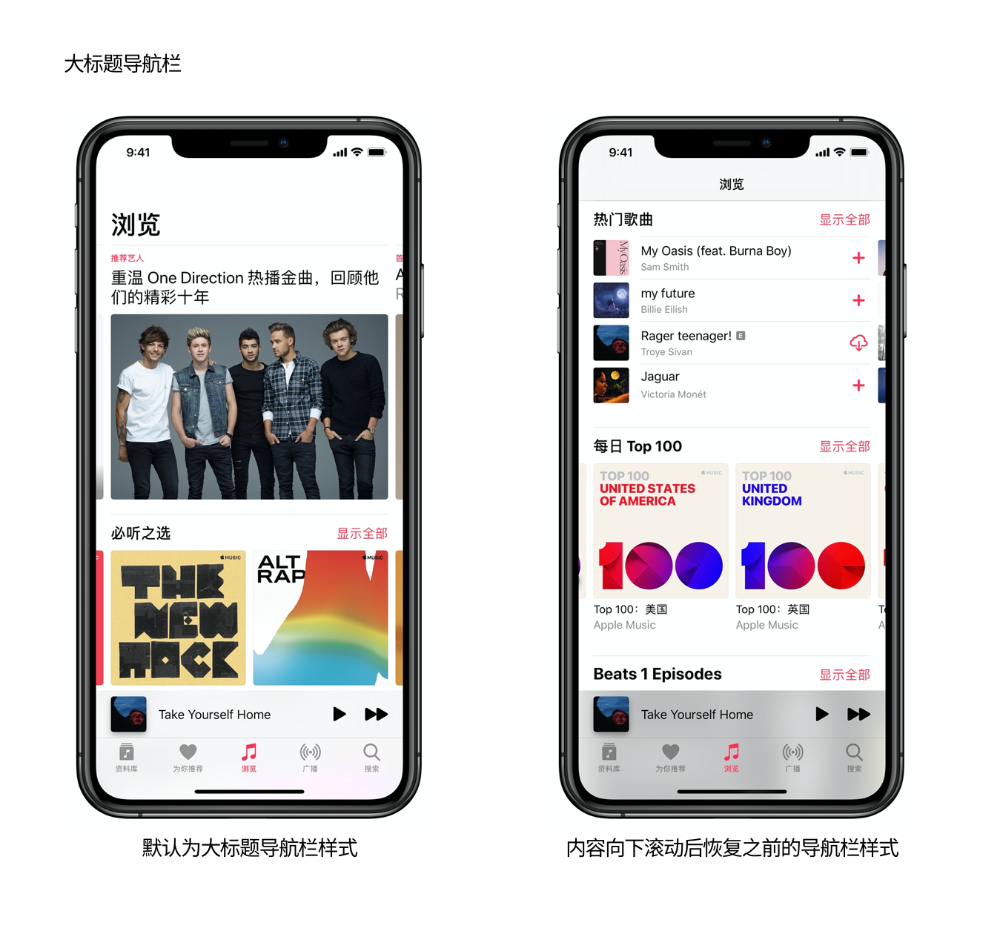
想要了解更多关于大标题导航栏，可参考我的文章：
新的菜单样式
在 iOS 14/iPadOS 14 中新增了一种菜单样式，当用户点击按钮时，新的菜单会直接显示在菜单旁边，而不再是使用以前的 Action Sheet（从屏幕底部弹出的菜单选项）样式，例如下图中的「提醒事项」app 。新的菜单样式可以让用户在较大的屏幕上更好地理解菜单选项和按钮之间的关系，同时可以不需要大幅度移动手指就可以完成操作。
值得注意的是，以前的 Action Sheet 样式也并不是不再使用，当执行破坏性操作（比如删除操作）时，仍然建议使用 Action Sheet 来让用户完成操作的二次确认，因为 Action Sheet 会吸引用户的注意力，只有将手指移动到屏幕才能做出选择，避免了误触的情况发生。
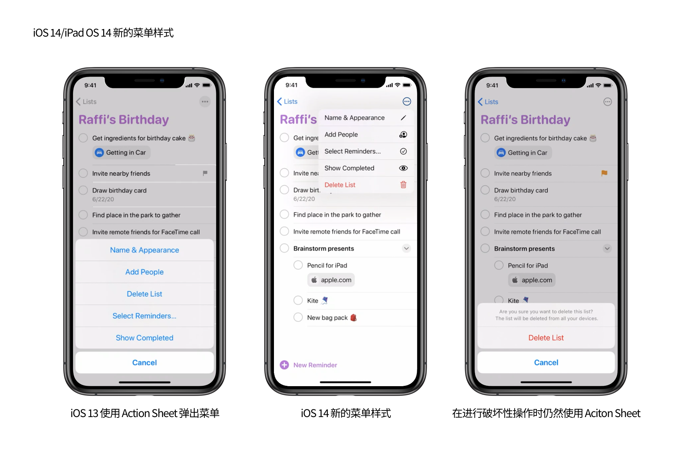
iPadOS 14 中也同样增加了这种菜单样式，这也与 macOS 中的弹出菜单交互逻辑保持一致，更有利于 iPad app 通过 Mac Catalyst 技术向 Mac 平台转移。
想要了解更多关于 iOS 14/iPadOS 14 新的菜单样式，可参考我的文章：
全面屏的放大显示
前文提到，从 iPhone 6 开始，iOS 在部分机型中新增了「放大显示」功能，放大显示的实质是将高一级的逻辑分辨率降级到同一比例的低一级的逻辑分辨率。在全面屏 iPhone 中，6.1 寸、6.5 寸的 iPhone 具备放大显示的这个条件，所以这两种尺寸的 iPhone 在系统中同样可以开启放大显示模式；但 5.8 寸的 iPhone 不存在比它还要低一级的同一比例的逻辑分辨率，所以 5.8 寸的 iPhone X、iPhone Xs、iPhone 11 Pro 一直没有放大显示功能。
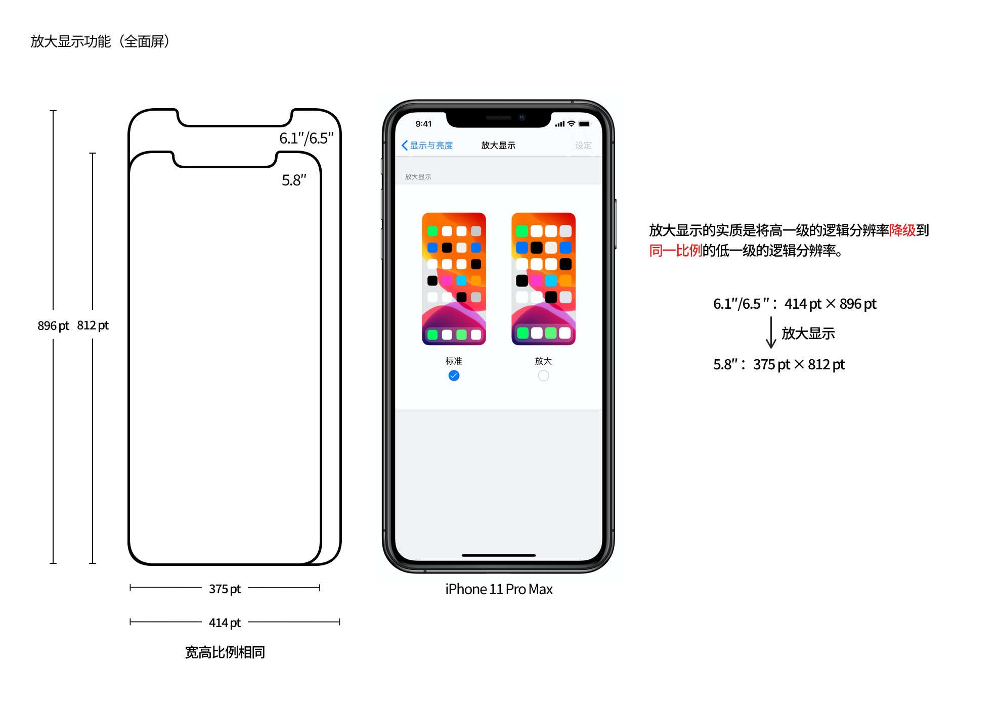
展望未来 iPhone
根据目前媒体获得的消息，2020 年秋季将会有四款 iPhone 发布，旗舰系列包括 5.4 寸的 iPhone 12（非最终命名，下同）和 6.1 寸的 iPhone 12 Plus，超旗舰系列包括 6.1 寸的 iPhone 12 Pro 和 6.7 寸的 iPhone 12 Pro Max。
旗舰 iPhone 12 会是什么样？
本文开头提到，在 iOS 14 Beta 3 版本中有用户发现 5.8 寸的 iPhone 也有了放大显示这个功能，根据前文所讲的放大显示的存在条件，我们可以推测存在一款 iPhone 与 5.8 寸 iPhone 的屏幕是同一比例，且逻辑分辨率比 5.8 寸 iPhone 低一级。
同时还发现 Xcode 中的模拟器可以正常运行在 960px × 2079px 分辨率下，假设比例因子为 @3x，其屏幕逻辑分辨率就为 320pt × 693pt。
综上两个发现，传闻中的 5.4 寸 iPhone 的屏幕参数似乎已浮出水面。
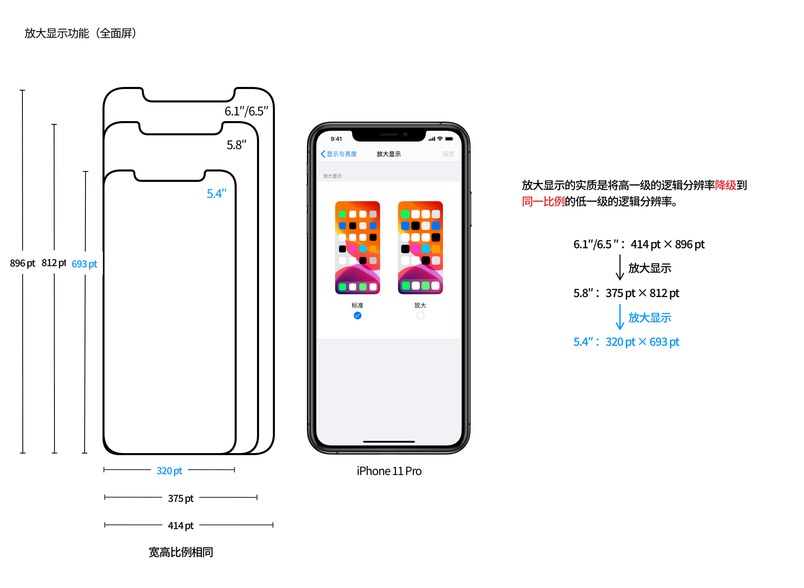
5.4 寸 iPhone 12 由 4 寸 iPhone SE 第一代进化而来
小屏旗舰 iPhone 12 配备 5.4 寸屏幕，屏幕渲染分辨率为 960px × 2079px，PPI 约为 424，逻辑分辨率为 320pt × 693pt @3x。
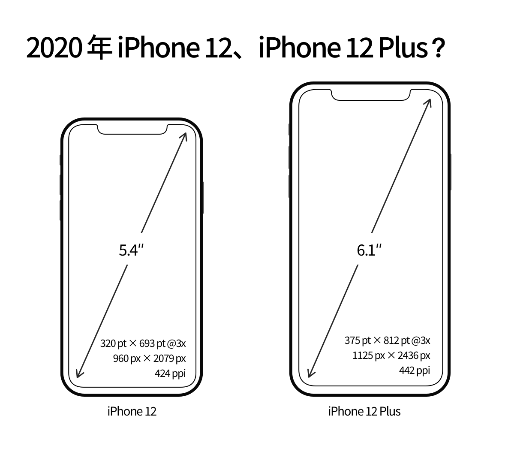
在本文最初成文时，我没有太多考虑 6.1 寸 iPhone 12 Plus 会是什么样，本以为相比上一代不会发生什么变化，毕竟它和 iPhone Xʀ、iPhone 11 具有相同的屏幕尺寸，但与读者讨论后我发现我忽略了一个细节—— iPhone 12 Plus 会改用 OLED 屏幕，而同样分辨率的 LCD 屏和 OLED 屏的清晰度观感是不一样的。
如下图，左边 LCD 屏幕的像素排列方式是 RGB，三个子像素点不论是大小还是个数都是相同的；右边 OLED 屏幕的像素排列方式是 Pentile，绿色像素点是红蓝像素点的 2 倍，而且单个红蓝像素点面积要比绿色像素点大。正是因为 OLED 屏幕上像素排列方式的特殊，在相同尺寸相同分辨率的条件下，LCD 屏幕会比 OLED 屏幕更清晰，特别是在红色和蓝色较多的情况下。所以为了达到与 LCD 屏幕相同的屏幕清晰度观感，只能提高 OLED 屏幕的分辨率。若 OLED 屏的 iPhone 12 Plus 保持与上一代一样的屏幕分辨率这肯定就说不过去了。
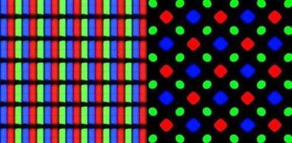
所以猜测大屏旗舰 6.1 寸屏幕的 iPhone 12 Plus 会改用 375pt × 812pt @3x 的逻辑分辨率。
回到小屏旗舰 iPhone 12 上，可以看出 5.4 寸 iPhone 12 的逻辑分辨率的宽度与 4 寸的 iPhone SE 第一代是相同的，都是 320pt。5.4 寸的 iPhone 12 的屏幕变化实质也是「横向不变，纵向变长」，相比 iPhone SE 第一代，纵向上多了 125pt，当 app 没有适配新尺寸的 iPhone 时，上下会出现黑边。这样来看，5.4 寸的 iPhone 12 就是之前大家翘首以待的全面屏 iPhone SE。
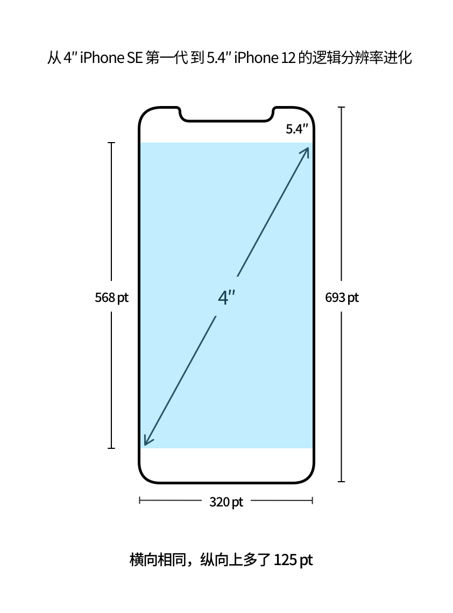
屏幕显示的内容数量较少
屏幕的逻辑分辨率影响着屏幕上内容的数量，下图列举对比了目前三种宽度逻辑分辨率的 iPhone 显示同一内容时的实际情况，可以很明显地看出：
- 宽度 414pt 的 6.1 寸、6.5 iPhone 显示的内容最多，375pt 的 5.8 寸 iPhone 次之，320pt 的 5.4 寸 iPhone 最少；
- 图片显示区域，414pt 宽度的 iPhone 上可以看到第三张图片的 1/4，375pt 宽度的 iPhone 上几乎看不到第三张图片。320pt 宽度的 iPhone 上第二张图片都不能显示完全；
- 文字显示区域，屏幕宽度和高度会共同影响屏幕上能显示文字的数量；
- 特别地，320pt 宽度的 5.4 寸 iPhone 上，导航栏的按钮已经显得有些拥挤了。
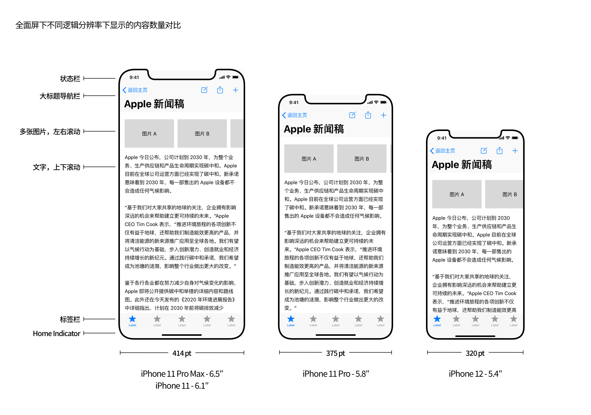
非全面屏 4 寸的第一代 iPhone SE 仍然支持 iOS 14、全面屏 5.4 寸 iPhone 再次引入 320pt 宽度，在屏幕日趋变大的今天，设计师和开发者仍然需要为 320pt 这样较窄宽度的 iPhone 进行 app 设计、适配和开发。
刘海变窄变小？
全面屏 iPhone 的刘海中包含的物理元器件并不随 iPhone 的屏幕尺寸所变化，根据网上找到的资料，刘海的宽度大概为 209pt。在目前放出的 iOS 14 Beta 版本中，刘海附近的状态栏显示区域（包含基本的时间、信号、网络和电量信息）并没有发生设计上的改变，而当把现有的状态栏放到 320pt 宽度的 iPhone 上时，我们会发现其无法承载现有的状态栏信息，那这是否可以推测 5.4 寸的 iPhone 12 抑或是整个 iPhone 12 系列的刘海会变得更窄更小呢？
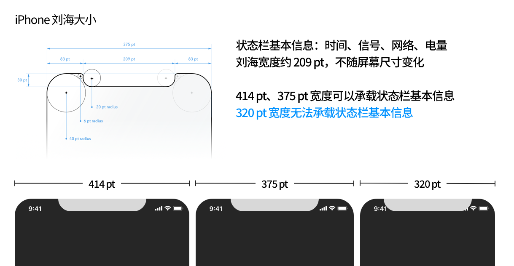
超旗舰 iPhone 12 Pro 又会是什么样？
超旗舰 6.1 寸的 iPhone 12 Pro 和 6.7 寸 的 iPhone 12 Pro Max，相比于上一代屏幕尺寸都有一定程度的小幅增大。根据之前 iPhone 屏幕逻辑分辨率的进化规律，我认为 Apple 对于逻辑分辨率的改变是比较谨慎的，因为新的逻辑分辨率对设计师和开发者就意味着新的设计、适配和开发工作，iPhone 的屏幕尺寸就会更加碎片化，所以如果 iPhone 12 Pro 的尺寸真的是 6.1 寸和 6.7 寸，猜测屏幕尺寸的整体变大可能是由于屏幕边框变窄导致，iPhone 12 Pro 系列的屏幕逻辑分辨率和渲染分辨率应该与上一代保持一致，PPI 稍有降低。
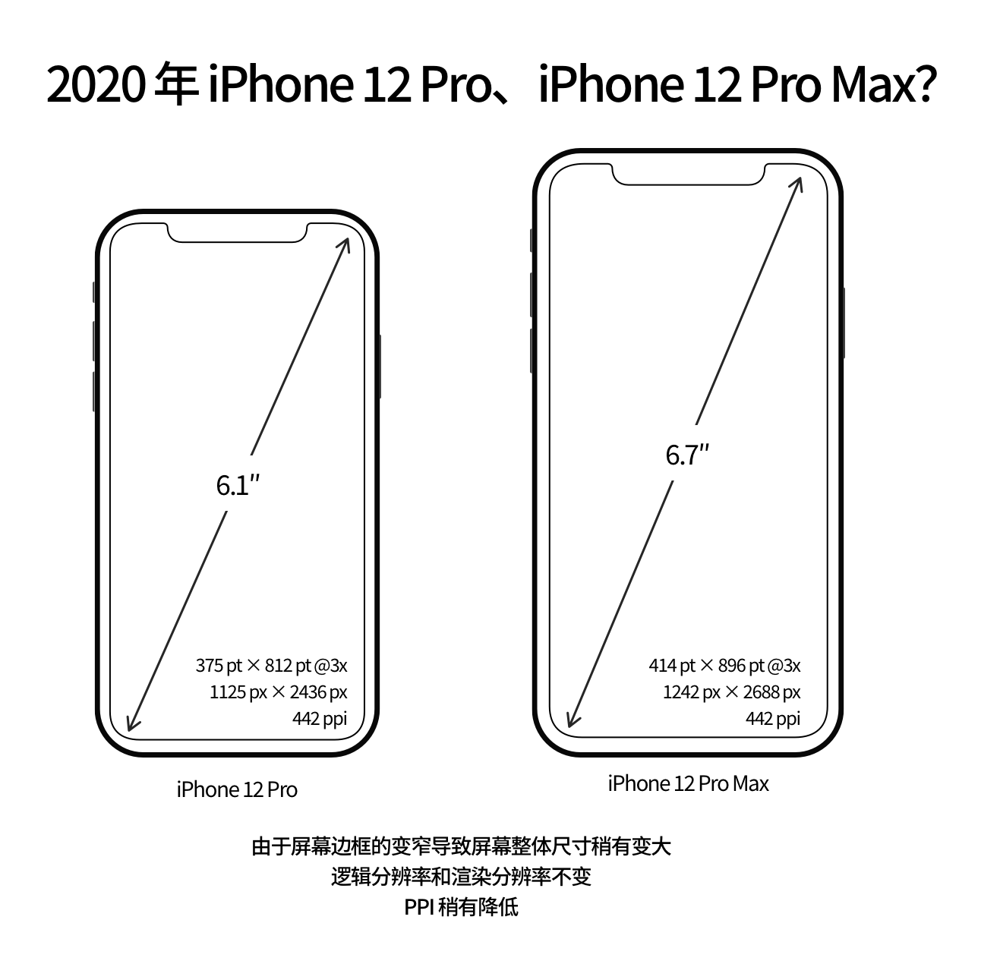
iPhone 屏幕还会怎么变？
目前 iPhone 的最大尺寸是 6.5 寸，这个尺寸的手机对于用户日常使用来说已经基本到达极限，如果按照之前的屏幕进化规律通过「横向不变，纵向变长」或者「等比放大」的方法继续变大已经没有必要，但不可否认的是，更大的显示屏幕更有利于内容的显示和多任务的操作，对于手机来说，体积尽量小，但屏幕尽量大的折叠屏手机可能会成为未来的发展方向。
隔壁 Android 阵营已经有多家厂商发布了折叠屏手机，比如三星 Galaxy Fold、华为 Mate X，折叠屏也很可能成为 iPhone 未来发展的一个方向，iPhone 的屏幕很有可能出现第三个进化方法——横向放大，纵向不变。
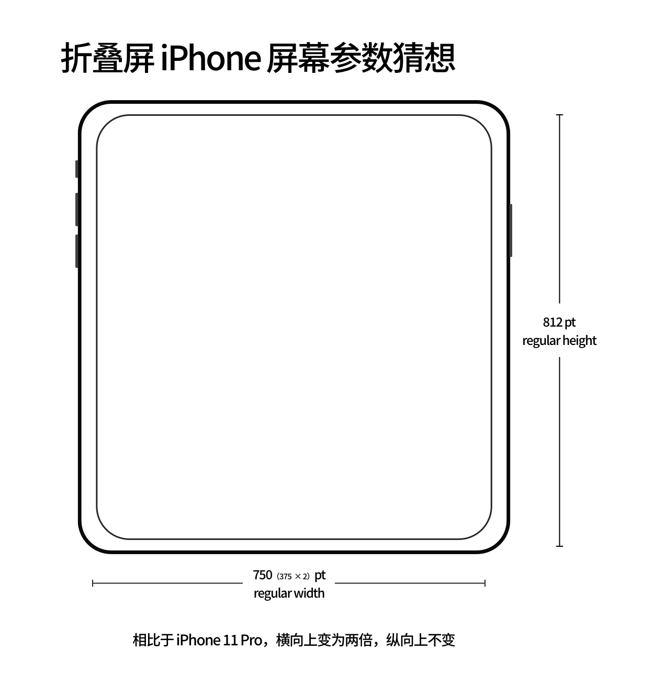
畅想一下，在折叠屏 iPhone 上，你可以让 app 按照以前接近两倍的显示面积来显示；也可以让一个 app 全屏显示，另一个 app 以小窗口的形式悬浮在另一个 app 之上，类似 iPadOS 上的 Slide Over；更可以让两个 app 并排显示，类似 iPadOS 上的 Split View。
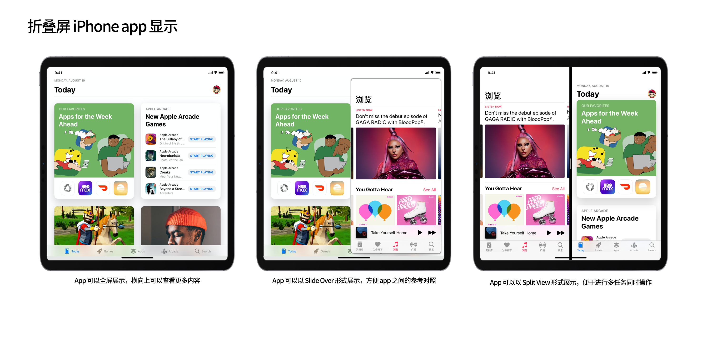
一方面，app 在设计内容布局时使用了 Auto Layout、Size Class、Safe Area 这些武器，app 的布局适应性更高；另一方面更多的 iPad app 已经可以以任何尺寸自适应布局灵活显示，固定尺寸大小的 app 设计思想正在被弱化，同时 app 多任务、多窗口的功能已在 iPadOS 中进化得逐步完善。基于这两方面，到折叠屏 iPhone 推出时，iOS 和 iPadOS 上的 app 适配的阵痛期就会更短。
总的来看，iPhone 屏幕逐渐变大，甚至翻倍，尺寸接近 iPad，iPad 部分功能下放到 iPhone 上，iPhone 与 iPad 的边界会变得逐渐模糊；同时，iPad 的 app 通过 Mac Catalyst 技术向 Mac 平台转移，Mac 逐步放弃 Intel 芯片，逐渐采用 Apple Silicon，iPad 和 Mac 的边界也同样在变得模糊。或许在未来的某一天，iPhone、iPad、Mac 的 app 生态会逐渐融合，合为一体。
总结
从第一代 iPhone 到 iPhone 12，每一次屏幕尺寸的变化不仅仅是硬件上物理参数的变化，背后还有着缜密的 app 设计逻辑牵制着硬件参数的变化：
- **横向不变，纵向变长：**从 iPhone 4s 到 iPhone 5，从 iPhone 8 到 iPhone X，从 iPhone 8 Plus 到 iPhone Xʀ、iPhone Xs Max，从 iPhone SE 第一代到 iPhone 12 采用了这个变化规律，纵向上比以前可以看到更多内容；
- **等比放大：**从 iPhone 5s 到 iPhone6、iPhone 6 Plus，从 iPhone X 到 iPhone Xs Max、iPhone Xʀ、iPhone 12 采用了这个变化规律，横纵向上都比以前可以看到更多内容；
- 屏幕尺寸不断增多，但屏幕逻辑分辨率宽度现在只有 320pt、375pt、414pt 三种。
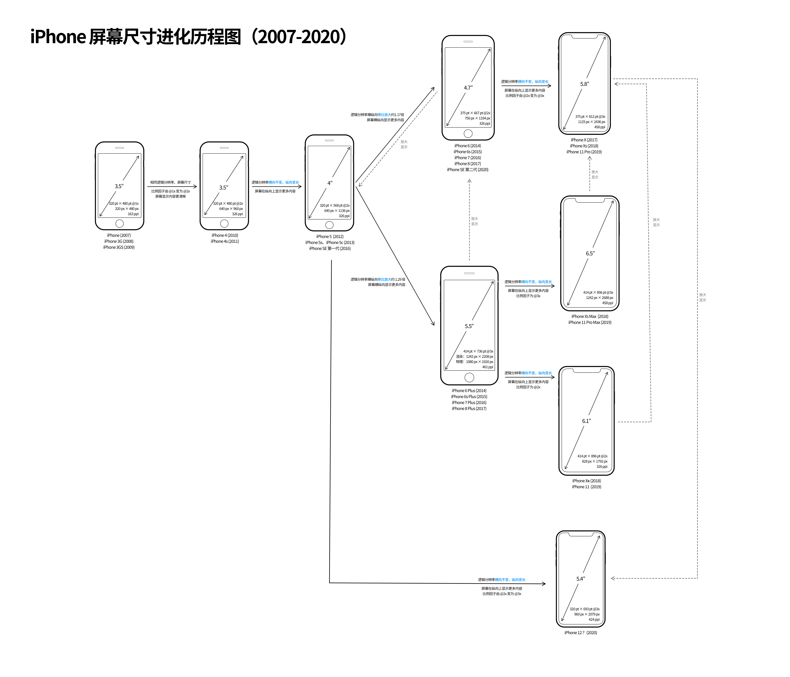
为了让 app 能在各种屏幕尺寸的 iPhone 上都能完美显示，下面的武器必不可少，它们隐藏在 app 背后，默默发挥着作用：
- Point 点：抛开像素密度的干扰，专注于内容数量的对比；
- Auto Layout 自动布局：不对每一台设备进行绝对布局，通过确定 view 之间的约束关系针对所有设备进行相对布局；
- Size Class 尺寸级别：竖屏、横屏，小屏、大屏，不同使用情景采取不同内容布局方案；
- Safe Area 安全区域：非规则屏幕下的内容布局规范。
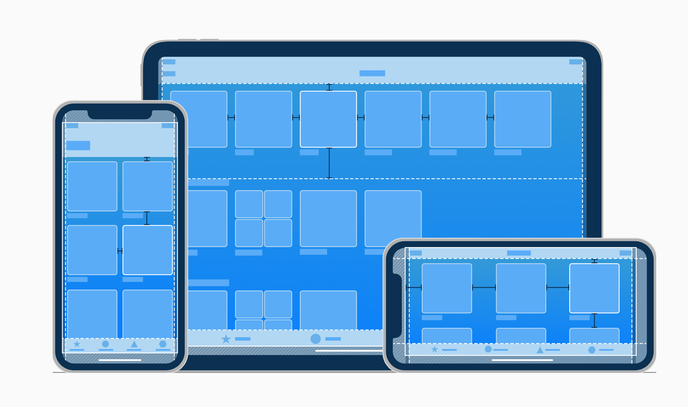
屏幕尺寸的不断进化也带来了 iPhone 上功能和交互的变化：
- 放大显示功能：使用低一级的同比例的逻辑分辨率在更大屏幕上显示内容；
- 深色模式功能：让 OLED 屏幕更省电；
- 新的大标题导航栏：利用更长的屏幕展示更醒目的标题，增强用户在 app 内的空间感；
- 新的菜单样式：缩短用户操作路径，让按钮与操作之间关系更紧密，与 Mac 上的菜单样式保持一致。
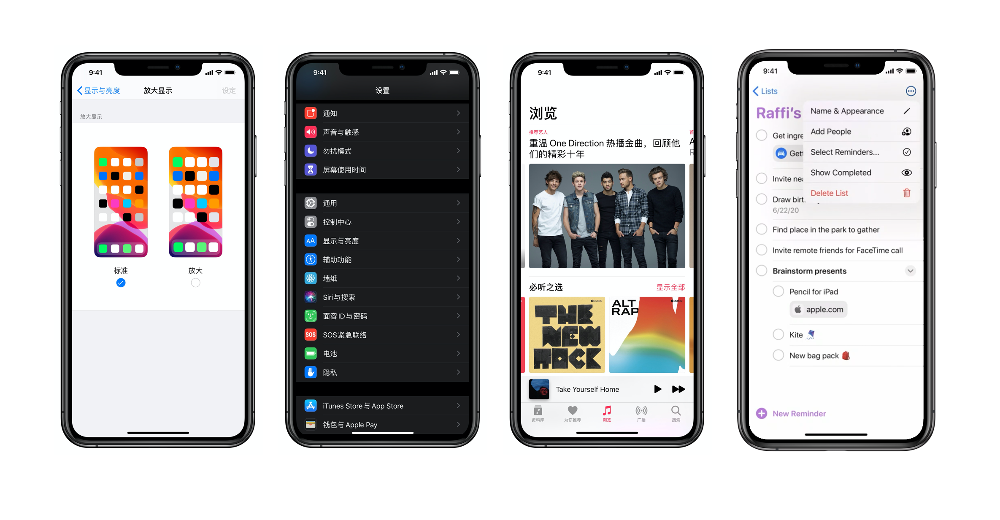
对于即将到来的 5.4 寸 iPhone 12，基于 iOS 14 Beta 版本中发现的线索，可以猜想：
- 从逻辑分辨率上来看，5.4 寸 iPhone 12 基于第一代 iPhone SE 横向不变，纵向变长进化而来；
- 小屏便利的同时，内容显示数量作出了牺牲，320pt 的屏幕宽度相比于更大尺寸显示的内容数量偏少；
- 刘海可能会变窄变小以承载完整的状态栏信息。
在 iPhone 屏幕尺寸发展走到极限的今天，未来的 iPhone 可能会朝着折叠屏的方向发展，出现第三种变化方式——横向放大，纵向不变，而在这之前已有了许多铺垫：
- iPad 上的 app 支持 Slide Over 侧拉、Split View 分屏浏览等多任务功能，支持一个 app 的多窗口功能；
- App 的内容布局可以自适应多种不同尺寸、不同比例的屏幕，在 Auto Layout、Size Class、Safe Area 的帮助下，固定尺寸的 app 设计思想被弱化，Apple 生态圈的 app 自由变换显示尺寸指日可待；
- Apple 自身也在强力推进开发者的 app 适配所有的屏幕尺寸。
纵观 iPhone 的屏幕进化历程可以看出 iPhone 的屏幕进化不仅仅是硬件上物理参数的改变，还伴随着软件上设计和开发逻辑的不断完善，前期硬件和软件的进化或许早已为以后的软硬件埋下了种子，这种软硬一体，硬件和软件相互影响、相互牵制的设计思想可能正是解释很多人会问到的「为什么总感觉 iPhone 比 Android 好用一点，但又说不出具体哪里好？」这种问题的一个答案。
「罗马不是一日建成的」，智能手机的生态走到今天，各家手机厂商的产品已是大差不差，但可能就是在那些微不足道的地方的细细耕耘、日积月累默默地抓住了用户的心。
如果你觉得这篇文章对你有所帮助，欢迎请我喝杯咖啡，感谢你的支持😁


{kind=link}
{kind=link}